세션: 로판이별Instag영상 분석 및 재제작 · 사진을 누르면 크게 보기 → ‘원본 파일 열기’로 새 탭
요청하신 5개 링크 중 4개를 프레임·컷·대사·음량·주파수까지 실측 분석했습니다. 한 페이지에 영상 1개씩 담았습니다.
| 순위 | 영상 | 하루 좋아요 | 총 좋아요 | 댓글 | 업로드 | 길이·컷 |
|---|---|---|---|---|---|---|
| 1위 | SHE CHECKED THE MIRROR. HE NEVER LOOKED AWAY. @alexnazarov.ai (Alex Nazarov | AI Filmmaker) | 79,748 (1위) | 318,994 | 324 | 2026-09-20 | 6.04초 · 컷 0개 (원테이크) |
| 2위 | I MADE IT. SHE'S NOT HERE. (Part 2) @alexnazarov.ai (Alex Nazarov | AI Filmmaker) | 60,601 | 727,207 (총량 1위) | 3,389 (좋아요 1천개당 4.66개) | 2026-09-12 | 10.88초 · 9샷 · 평균 1.21초/샷 |
| 3위 | He promised her this when they were kids… @alexnazarov.ai (Alex Nazarov | AI Filmmaker) | 36,117 | 722,338 | 789 | 2026-09-04 | 17.13초 · 5샷 + 눈깜빡임 전환 |
| 4위 | The Proposal. Part 1 @tetiana.noir (Tetiana Kotvytska | Digital Artist & AI Creator) | 9,491 | 170,836 | 1,079 (1천 좋아요당 6.32개 = 최고) | 2026-09-06 | 19.73초 · 9샷 + 블랙 |
| 첫 1초 = 완성된 그림 or 질문 | 4개 모두 로고·인트로 없이 0프레임부터 감정/사건. (거울·빈 조수석·달리는 여자·잔 속 반지) |
| 말 대신 소품·시선·색 | 거울(시선 차단), 빈 좌석, 어깨 위 손, 시계 — 대사 없이 이해되는 전 세계 공용 언어 |
| 대비 편집 | 낮/밤, 황금/청회색, 행복/배신 — 두 상태를 붙여 감정 낙차를 만듦 |
| 컷은 비트 위, 마지막 샷은 가장 길게 | P2·P3는 컷이 음악 박자에 ±1프레임, P2·P4는 감정 착지 샷이 최장 |
| 소리 연출 | J컷(소리 먼저), 정적 후 드롭, 로우패스 먹먹함 — 화면보다 소리가 감정을 먼저 움직임 |
| 열린 결말 + 캡션 완성 | 결말을 안 보여주고 캡션/Part 표기/질문으로 댓글·프로필 방문·반복재생 유도 |
| 필름 룩 | 그레인·헐레이션·살짝 소프트 = ‘AI 티’를 줄이고 영화처럼 보이게 하는 공통 후처리 |
a photorealistic anthropomorphic Syrian hamster man with golden-orange and cream fur, round glossy black eyes, small pink nose, soft whiskers, expressive human-like facial acting, upright human-like posture and hands with tiny pink fingers
a photorealistic anthropomorphic dwarf hamster woman with fluffy pearl-white and silver-grey fur, large dark glossy eyes with long lashes, tiny pink nose, expressive human-like facial acting, upright human-like posture and delicate hands
every prop, chair, table, car and building is scaled to hamster size so the world feels natural, real fur strand detail, cinematic live-action look, not cartoon, not 3D render, not plush toy
Character reference sheet on a neutral light-grey background, front view, three-quarter view, side profile and full body, consistent identity across all views: a photorealistic anthropomorphic Syrian hamster man with golden-orange and cream fur, round glossy black eyes, small pink nose, soft whiskers, expressive human-like facial acting, upright human-like posture and hands with tiny pink fingers. Same sheet style for: a photorealistic anthropomorphic dwarf hamster woman with fluffy pearl-white and silver-grey fur, large dark glossy eyes with long lashes, tiny pink nose, expressive human-like facial acting, upright human-like posture and delicate hands. Photorealistic, soft studio light, sharp fur detail, no text labels.
기간 대비 1위 · 하루 79,748 좋아요@alexnazarov.ai (Alex Nazarov | AI Filmmaker) · 업로드 2026-09-20
캡션: 장소도 커피도 대화도 잊지만, 내가 안 볼 때 나를 바라보던 눈빛은 기억한다. (Made with @higgsfield.ai)
| 좋아요 | 318,994 |
|---|---|
| 댓글 | 324 |
| 업로드 후 | 4일 |
| 하루 평균 좋아요 | 79,748 (1위) |
| 길이 | 6.04초 · 컷 0개 (원테이크) |
| 해상도 · fps | 1916×1078 (16:9 가로) · 24fps |
| 대사 · 자막 | 없음 (전 세계 공용) |
| 이 영상은 | 6초 동안 카메라가 아주 천천히 다가가는 단 한 장면. 여자는 거울만 보고, 남자는 여자만 본다. |
|---|---|
| 핵심 장치 | ‘시선의 방향’ 하나로 사랑의 크기 차이를 보여줌 + 캡션이 해석을 완성 |
| 따라 만들 난이도 | 쉬움 — 이미지 1장 + 영상 1클립 + 음악 1곡 |
| 예상 제작 시간 | 약 40~60분 (이미지 3~4회 뽑기, 영상 3~5회 뽑기 포함) |
| 사용자 흐름 | ① 햄스터 커플 캐릭터 시트 → ② S1 이미지 생성 → ③ 영상 생성 → ④ FFmpeg로 필름룩·루프 → ⑤ 캡션 붙여 업로드 |
| 구간 | 역할 | 내용 |
|---|---|---|
| 0.00–1.00s | 훅 (설정) | 첫 프레임부터 완성된 그림. 여자 립스틱, 남자 턱 괴고 응시. 움직임 최소 = 그림처럼 멈춰 보게 함. |
| 1.00–4.50s | 감정 쌓기 | 여자는 거울 속 자기 입술에 집중, 남자는 미소가 점점 깊어짐. 카메라는 계속 아주 느리게 다가감. |
| 4.50–6.04s | 착지 · 루프 | 동작이 첫 프레임과 비슷한 자세로 돌아옴 → 반복 재생 시 이음새 없음. |
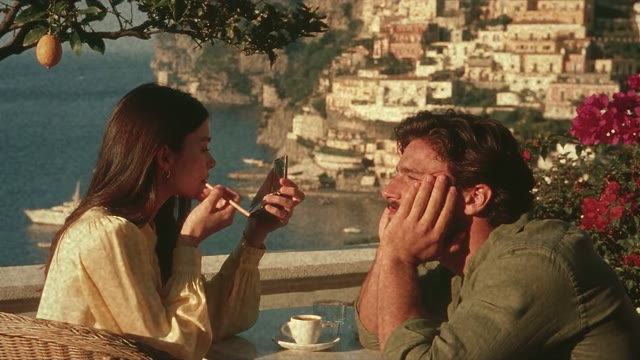
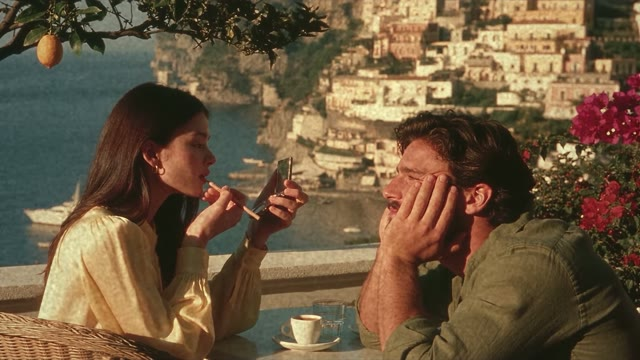
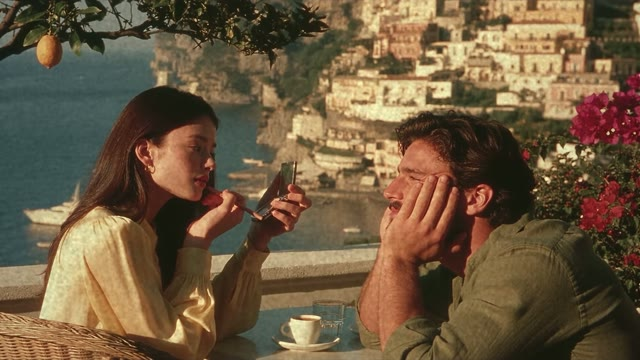
| 샷 크기 / 앵글 | 미디엄 투샷 (허리 위), 눈높이 측면 앵글 — 두 사람 모두 옆모습 |
|---|---|
| 렌즈 · 심도 | 약 75mm 망원 느낌, f/2.8 — 배경(포지타노 마을)이 적당히 흐림 |
| 카메라 무빙 | 아주 느린 달리 인(push-in): 6초 동안 약 5% 확대. 흔들림 없음 |
| 화면 구도 (위치) | 여자 얼굴 = 화면 왼쪽 22%·위에서 35% / 남자 얼굴 = 화면 가운데-오른쪽 58%·위에서 45% (남자가 카메라에 더 가깝고 더 크게) / 두 사람 사이 가운데에 손거울 = 시선이 막히는 지점 |
| 인물 행동 · 표정 | 여자: 오른손 손거울, 왼손 빨간 립스틱을 입술에 톡톡, 눈은 거울만. 남자: 두 손으로 턱을 괴고 팔꿈치는 테이블, 그녀만 바라보며 입가 미소가 점점 커지고 2.5~3.5초에 입이 살짝 벌어짐 |
| 배경 · 소품 | 뒤: 절벽에 층층이 쌓인 파스텔 집들 + 청록 바다 + 작은 흰 요트 / 왼쪽 위 전경: 레몬 나뭇가지와 레몬 1개(프레임 안의 프레임) / 오른쪽 가장자리: 자홍색 부겐빌레아 / 아래: 흰 에스프레소 잔+받침, 유리잔, 왼쪽 아래 라탄 의자 가장자리 |
| 조명 · 색 | 골든아워 역광·측광(카메라 왼쪽 뒤), 부드러운 하이라이트 / 따뜻한 버터 옐로우 + 청록 바다의 보색 대비 / 35mm 필름 그레인, 은은한 헐레이션, 살짝 뜬 검정 |
| 들어오는 전환 | 없음 (원테이크, 루프 재생) |
| 소리 (BGM/SFX/대사) | 저역 위주의 따뜻한 음악(고음이 깎인 빈티지 라디오 느낌) + 1.0s·4.6s 악센트. 대사 없음 |
| 편집 의도 | 컷을 안 하는 것이 이 영상의 편집이다. 시선 방향만으로 감정을 보여주고, 끝과 시작을 맞춰 무한 반복되게 설계. |
kling-v3 — 손·입술 미세 동작과 미소 변화가 가장 안정적, 5초 이상 원테이크minimax-h3 — 바람·머리카락 같은 자연스러운 미세 움직임, 가성비veo-3-1 — 필름 질감 + 카페·파도 앰비언스 소리까지 같이 생성midjourney-v8-2 — 필름 질감·골든아워 분위기nano-banana-pro — 햄스터 캐릭터 얼굴 고정 편집seedream-5-0-pro — 고해상도 실사 배경Cinematic 35mm film still, 16:9, golden hour on a sun-drenched terrace café in Positano, Amalfi Coast. Side-profile medium two-shot at eye level. LEFT (face at 22% from left, 35% from top): a young woman with long straight brunette hair in a pale butter-yellow silk blouse applies red lipstick with her left hand while looking only into a small silver compact mirror held in her right hand. RIGHT (face at 58% from left, slightly closer to camera and larger): a young man with tousled brown hair in an olive-green linen shirt rests his chin on both hands, elbows on the table, gazing at her with a soft adoring smile. On the table between them: a white espresso cup on a saucer and a water glass. Lower-left foreground: edge of a rattan chair. Background: pastel cliffside houses of Positano stacked down to a turquoise sea with small white boats. A lemon-tree branch with one hanging lemon enters the top-left corner, magenta bougainvillea on the right edge. Warm low sun from camera-left behind them, soft highlights, Kodak Portra 400 film grain, subtle halation, slightly lifted blacks, 75mm lens, f/2.8.
Cinematic 35mm film still, 16:9, golden hour on a sun-drenched terrace café in Positano, Amalfi Coast. Side-profile medium two-shot at eye level. LEFT (face at 22% from left, 35% from top): a photorealistic anthropomorphic dwarf hamster woman with fluffy pearl-white and silver-grey fur, large dark glossy eyes with long lashes, tiny pink nose, expressive human-like facial acting, upright human-like posture and delicate hands, wearing a pale butter-yellow silk blouse, applying red lipstick with one tiny hand while looking only into a small silver compact mirror held in the other hand. RIGHT (face at 58% from left, slightly closer to camera and larger): a photorealistic anthropomorphic Syrian hamster man with golden-orange and cream fur, round glossy black eyes, small pink nose, soft whiskers, expressive human-like facial acting, upright human-like posture and hands with tiny pink fingers, wearing an olive-green linen shirt, resting his chin on both paws, elbows on the table, gazing at her with a soft adoring smile. Tiny white espresso cup on a saucer between them, rattan chair edge lower-left. Background: pastel cliffside houses of Positano down to a turquoise sea with small white boats, a lemon branch with one lemon top-left, magenta bougainvillea right edge. every prop, chair, table, car and building is scaled to hamster size so the world feels natural, real fur strand detail, cinematic live-action look, not cartoon, not 3D render, not plush toy. Warm low sun from camera-left, Kodak Portra 400 grain, subtle halation, lifted blacks, 75mm, f/2.8.
Very slow dolly-in, about 5 percent over 6 seconds, otherwise locked-off and perfectly stable. She keeps applying lipstick in tiny precise strokes, eyes only on her compact mirror, never looking at him. He stays still with his chin on his hands; his smile slowly deepens, he blinks softly once and his mouth opens slightly as if about to laugh, completely absorbed in her. A light breeze moves the ends of her hair and the bougainvillea. Boats barely drift on the sea. The last second returns close to the opening pose so the clip can loop. Natural, subtle, no cuts, 24fps film look.
no eye contact between them, no looking at camera, no extra people walking through, no text, no watermark, no morphing fingers, no lipstick smearing, no fast motion, no zoom jump, no camera shake, no cartoon style
왼쪽 = 첫 프레임, 오른쪽 = 마지막 프레임. 카메라가 약 5% 다가간 것 외에는 자세가 거의 같다. 마지막 0.25초를 첫 0.25초와 겹쳐 녹이면 반복 재생 때 끊김이 사라진다.
ffmpeg -i s01.mp4 -filter_complex "[0:v]split[m][h];[h]trim=0:0.25,setpts=PTS-STARTPTS[head];[m]trim=0.25:6.04,setpts=PTS-STARTPTS[body];[body][head]xfade=transition=fade:duration=0.25:offset=5.54[v]" -map "[v]" -c:v libx264 -crf 16 loop.mp4
같은 영상을 트랙 2개에 올린다. 트랙0: data-start=0 data-media-start=0.25 data-duration=5.79. 트랙1: data-start=5.54 data-media-start=0 data-duration=0.25 이고 opacity 0→1 (0.25초) 페이드. 크로스페이드 레시피(creator-editing-recipes.md의 Crossfade)를 그대로 사용.
주파수 그림을 보면 고음(위쪽)이 거의 비어 있고 저음이 꽉 차 있다 = 고음을 깎은(로우패스) 따뜻한 빈티지 음악. 1.0초와 4.6초에 음량이 올라오는 악센트가 있어 영상이 ‘숨 쉬는’ 느낌을 준다. 대사 없음.
| 시간 | 소리 | 제작 방법 |
|---|---|---|
| 0.0–6.04s | BGM: 느린 빈티지 이탈리안 로맨스풍 (약 70~80 BPM), 저역 중심 | text2music 생성 → FFmpeg lowpass=f=3500 로 옛 라디오 질감 |
| 1.0s / 4.6s | 음악 악센트 (음량 상승) | 음악의 프레이즈 시작점을 1.0s에 맞춰 자르기(atrim 시작점 조정) |
| 전 구간 -30dB | 앰비언스: 잔잔한 파도 + 먼 카페 소음 + 찻잔 달그락 1회 | 무료 효과음 or veo-3-1 동시 생성 소리 사용 |
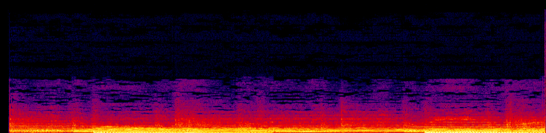
Warm vintage 1960s Italian romantic ballad, soft mandolin and nylon-string guitar, gentle strings pad, lo-fi vinyl warmth, muffled like an old café radio, slow 74 BPM, dreamy and tender, instrumental, no vocals, seamless loop friendly, 8 seconds intro phrase
| 요소 | 설정 |
|---|---|
| 기본 톤 | 따뜻한 버터 옐로우 하이라이트 + 청록 바다 (보색 대비) |
| 검정 | 살짝 뜬 검정(lifted blacks) — curves 0→0.05 |
| 그레인 | 35mm 필름 그레인: noise=alls=9:allf=t |
| 헐레이션 | 밝은 부분 주변 붉은 번짐 — 하이라이트만 추출 → 블러 → 빨강 위주 → screen 합성 35% |
| 비네팅 | vignette=PI/6 (가장자리 살짝 어둡게) |
| 원테이크 (Oner / Long take) | 컷 없이 한 번에 찍은 샷. 짧은 릴스에선 ‘완성된 그림’을 보여주는 강한 훅 |
| 막힌 시선 (Blocked eyeline) | 한 사람의 시선이 상대가 아닌 물건(거울)에서 멈춤 → 감정의 비대칭을 시각화 |
| 푸시 인 (Push-in / Dolly-in) | 카메라가 천천히 다가감. 관객의 집중을 몰래 끌어당김 |
| 프레임 안의 프레임 (Foreground framing) | 레몬 가지·꽃이 화면 가장자리를 감싸 깊이감을 만듦 |
| 심리스 루프 (Seamless loop) | 끝과 시작을 맞춰 반복 재생 시 끊김이 없게 하는 기법 |
# === P1 거울 원테이크: 필름룩 + 루프 + 음악 === # 준비물: s01.mp4 (AI 생성 원테이크, 6초 이상), bgm.wav, amb.wav(파도/카페) ffmpeg -y -i s01.mp4 -i bgm.wav -i amb.wav -filter_complex " [0:v]scale=1920:1080:force_original_aspect_ratio=increase,crop=1920:1080,fps=24,setsar=1,trim=0:6.04,setpts=PTS-STARTPTS, split[m][h]; [h]trim=0:0.25,setpts=PTS-STARTPTS[head]; [m]trim=0.25:6.04,setpts=PTS-STARTPTS[body]; [body][head]xfade=transition=fade:duration=0.25:offset=5.54,format=gbrp,split[o][g]; [g]lutrgb=r='if(gt(val,215),val,0)':g='if(gt(val,215),val,0)':b='if(gt(val,215),val,0)',gblur=sigma=14, colorchannelmixer=rr=1:gg=0.35:bb=0.2[hal]; [o][hal]blend=all_mode=screen:all_opacity=0.35, curves=all='0/0.05 0.5/0.52 1/0.97',colorbalance=rh=0.05:bh=-0.05:bs=0.03,eq=saturation=1.06, noise=alls=9:allf=t,vignette=PI/6,format=yuv420p[v]; [1:a]atrim=0:5.79,lowpass=f=3500,afade=t=in:d=0.2,afade=t=out:st=5.5:d=0.29,volume=0.9[m1]; [2:a]atrim=0:5.79,volume=0.25[amb]; [m1][amb]amix=inputs=2:normalize=0:duration=first,loudnorm=I=-14:TP=-1:LRA=11[a]" \ -map "[v]" -map "[a]" -c:v libx264 -preset slow -crf 17 -pix_fmt yuv420p -r 24 \ -c:a aac -b:a 192k -movflags +faststart P1_mirror_final.mp4 # 세로(9:16) 릴스 버전이 필요하면: 여자·남자·거울이 모두 들어가게 1080x1350(4:5)로 크롭 권장 # ffmpeg -i P1_mirror_final.mp4 -vf "crop=ih*4/5:ih:(iw-ih*4/5)*0.45:0,scale=1080:1350" -c:a copy P1_mirror_4x5.mp4
/hyperframes 1920x1080, 24fps, 길이 5.79초짜리 컴포지션 'p1-mirror'를 만들어줘. - 트랙0: s01.mp4, data-start=0, data-media-start=0.25, data-duration=5.79 (원테이크 본편) - 트랙1: s01.mp4, data-start=5.54, data-media-start=0, data-duration=0.25, 내부 래퍼 opacity 0→1 (루프 이음새 크로스페이드) - 전체에 느린 스케일 1.00→1.03 (GSAP, ease none) — 원본의 푸시인을 조금 더 보강 - 필름 그레인 오버레이: 전체화면 노이즈 PNG 시퀀스 or CSS 필터, mix-blend-mode overlay, 불투명도 0.18 - 비네팅: radial-gradient 투명→rgba(0,0,0,0.35) - 오디오: bgm.mp3 id=bgm data-volume=0.9, 0.2초 페이드인·0.29초 페이드아웃은 data-automation 볼륨 레인 사용; amb.mp3 id=amb data-volume=0.25 - 자막·텍스트 없음. npx hyperframes check 0 findings 후 snapshot 0.5s/3s/5.6s 확인, 렌더는 내 승인 후.
<div id="root" data-composition-id="p1-mirror" data-width="1920" data-height="1080" data-duration="5.79">
<video id="shot-main" class="clip" src="s01.mp4" data-start="0" data-media-start="0.25" data-duration="5.79" data-track-index="0" muted></video>
<div id="loop-tail" class="clip" data-start="5.54" data-duration="0.25" data-track-index="1">
<video id="shot-tail" src="s01.mp4" data-media-start="0" muted></video>
</div>
<div id="grain" class="clip" data-start="0" data-duration="5.79" data-track-index="2"></div>
<audio id="bgm" src="bgm.mp3" data-start="0" data-duration="5.79" data-volume="0.9"></audio>
<audio id="amb" src="amb.mp3" data-start="0" data-duration="5.79" data-volume="0.25"></audio>
</div>
<!-- GSAP: tl.fromTo('#shot-main',{scale:1},{scale:1.03,duration:5.79,ease:'none'},0);
tl.fromTo('#shot-tail',{opacity:0},{opacity:1,duration:0.25,ease:'none'},5.54);
window.__timelines['p1-mirror']=tl; -->[작업] 인스타 릴스 'SHE CHECKED THE MIRROR. HE NEVER LOOKED AWAY.'(6초 원테이크)를 햄스터 커플 버전으로 1:1 재현한다. [수정 가능 범위] 새 작업 폴더 안의 파일만 생성. 🔴 기존 파일 수정·삭제·업로드·결제는 승인 전 금지. 1) 캐릭터 시트: nano-banana-pro로 남자 햄스터(골든오렌지·크림 털, 올리브 리넨 셔츠) / 여자 햄스터(펄화이트·실버그레이 털, 버터옐로우 실크 블라우스) 정면·측면·3/4 시트 각 1장. 2) 키프레임: 이 페이지 S1의 ②동물 변환 이미지 프롬프트로 16:9 4장 생성 → 여자 얼굴 22%/35%, 남자 58%/45%, 가운데 손거울 위치가 맞는 1장 선택. 3) 영상: kling-v3 image2video 6초(없으면 minimax-h3), S1 ③모션 프롬프트 + ④네거티브. 3회 생성 후 손가락·립스틱 뭉개짐 없는 것 선택. 4) 음악: 이 페이지 BGM 프롬프트로 10초 생성(bgm.wav), 파도·카페 앰비언스(amb.wav) 준비. 5) 편집: 이 페이지 9번 FFmpeg 스크립트 그대로 실행 → P1_mirror_final.mp4 (5.79초, 24fps, -14 LUFS). 6) 검증: 첫/중간/끝 프레임 3장 캡처해서 원본 구도(시선 방향·손거울 위치·레몬 가지·부겐빌레아)와 나란히 비교표 제출. 7) 업로드용 캡션 초안 3개(영어+한국어, 원본처럼 '영상 해석형' 문장) 제안. 업로드는 하지 말 것.
kling-v3 / kling-v3-omni — 얼굴 미세 연기(눈물·굳는 미소), 손 연기, 첫/끝 프레임 지정(매치컷). omni는 캐릭터 참조 이미지로 얼굴 고정seedance-2-5 / seedance-2-0 — 다인물 동작(춤·달리기), 카메라 무빙, 멀티샷 일관성. 가성비 좋은 주력minimax-h3 / h3-max (Hailuo) — 물리·파티클(샴페인 스플래시, 지폐 비, 머리카락·드레스 휘날림), 자연스러운 미세 움직임hailuo-2-3 — 짧은 미세 동작 원테이크, 저렴한 대량 테스트veo-3-1 — 대사 립싱크 + 앰비언스 사운드 동시 생성, 필름 질감. 대사 있는 샷 1순위gemini-omni-1-1-flash (Google Omni) — 대사/소리 포함 빠른 초안, 참조 이미지 기반 일관성 테스트nano-banana-pro — 캐릭터 시트 → 샷별 키프레임 편집(얼굴·의상 고정), 사람→동물 교체 편집 1순위midjourney-v8-2 — 필름 룩·조명·분위기 최상. 첫 무드 키프레임용seedream-5-0-pro — 고해상도 실사 키프레임, 참조 여러 장 합성flux-kontext-max — 기존 프레임 부분 수정(손 위치 유지한 채 배경만 교체 = 매치컷 제작)gpt-image-2-5 — 반지·시계·지폐 같은 소품 디테일 정확도기간 대비 2위 · 하루 60,601 좋아요 · 댓글률 1위권@alexnazarov.ai (Alex Nazarov | AI Filmmaker) · 업로드 2026-09-12
캡션: 차는 비싸졌고, 옆자리는 비었다. 돈으로는 그 낡은 차에서 노래하던 그녀를 살 수 없다. Which life would you choose?
| 좋아요 | 727,207 (총량 1위) |
|---|---|
| 댓글 | 3,389 (좋아요 1천개당 4.66개) |
| 업로드 후 | 12일 |
| 하루 평균 좋아요 | 60,601 |
| 길이 | 10.88초 · 9샷 · 평균 1.21초/샷 |
| 해상도 · fps | 1916×1078 (16:9) · 25fps |
| 대사 | 없음 (노래만) |
| 이 영상은 | 같은 남자, 같은 카메라 위치. 가난했던 낮(옆에 그녀가 노래) ↔ 성공한 밤(혼자, 돈을 뿌리다 무너짐)을 음악 박자마다 번갈아 보여줌 |
|---|---|
| 핵심 장치 | ① 교차편집 ② 동일 구도(매칭 프레이밍)로 ‘빈 조수석’이 주인공이 됨 ③ 한 곡의 노래가 두 시간을 이어줌 |
| 따라 만들 난이도 | 보통 — 캐릭터 3컷(남 낮/남 밤/여) 고정이 관건 |
| 예상 제작 시간 | 약 2~3시간 (9샷 × 3회 생성 + 편집 30분) |
| 사용자 흐름 | ① 캐릭터 시트 → ② 낮 4샷·밤 5샷 키프레임 → ③ 영상 생성 → ④ 비트 맞춰 FFmpeg 교차편집 → ⑤ ‘어떤 삶을 고를래?’ 질문 캡션 |
| 구간 | 역할 | 내용 |
|---|---|---|
| 0.00–0.84s | 훅 | 밤, 혼자 비싼 차. 피곤한 반쪽 미소 — ‘뭔가 잃은 사람’의 얼굴로 시작 |
| 0.84–4.16s | 대비 제시 | 낮(그녀 노래·둘이 춤) ↔ 밤(혼자 따라 부르며 소리침)을 1초 단위로 교차 |
| 4.16–5.60s | 과잉 | 밤, 차 안에 지폐를 뿌림 — 돈은 넘치지만 공허함(가장 화려한 샷) |
| 5.60–8.96s | 상실의 확인 | 낮: 손에 입맞춤, 밤: 빈 조수석에 손가락질하며 말 걸기, 낮: 웃음 폭발 |
| 8.96–10.88s | 착지 · 여운 | 밤, 웃다가 무너져 핸들 위 팔에 얼굴을 묻음(가장 긴 샷) → 캡션 질문으로 댓글 유도 |
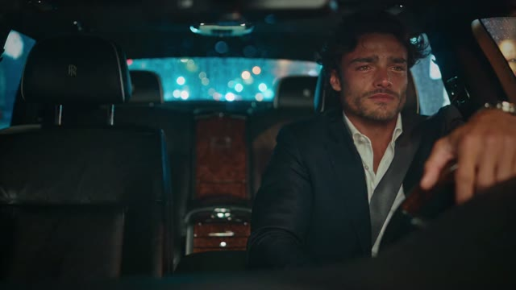
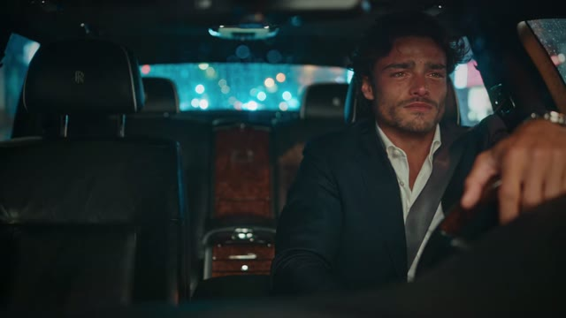
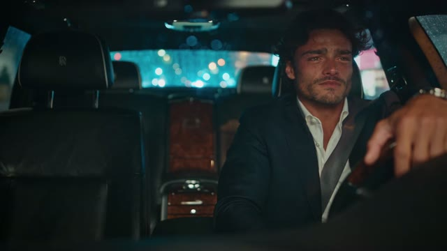
| 샷 크기 / 앵글 | 미디엄 투샷(앞좌석 2개 전체), 눈높이 정면 — 앞유리에 달린 카메라가 안쪽을 봄 |
|---|---|
| 렌즈 · 심도 | 24~28mm 광각, 딥포커스(뒷유리 밖만 보케) |
| 카메라 무빙 | 고정 + 미세한 주행 진동 |
| 화면 구도 (위치) | 조수석 = 화면 왼쪽 0~42% (밤: 비어 있음 / 낮: 여자), 운전석 = 오른쪽 55~90% (남자 얼굴 x≈68%, y≈25%), 가운데 뒤로 뒷유리·콘솔이 소실점. 낮·밤 모두 카메라 위치 100% 동일 |
| 인물 행동 · 표정 | 남자(정장) 오른손 핸들, 몸을 약간 뒤로 기댄 채 지친 반쪽 미소로 앞(카메라 쪽 전방)을 봄. 조수석 비어 있음 |
| 배경 · 소품 | 고급 세단: 검정 가죽 시트, 우드 콘솔, 뒷유리 너머 시안색 도시 불빛 보케 |
| 조명 · 색 | 저조도, 청록 역광 + 텅스텐 피부톤, 짙은 검정, 채도 낮음 |
| 들어오는 전환 | 하드컷 (비트에 맞춘 컷, 낮↔밤 교차) |
| 소리 (BGM/SFX/대사) | 노래 인트로 시작 (125 BPM) |
| 편집 의도 | 첫 0.8초에 ‘성공했지만 외로운’ 상태를 한 번에 보여주는 훅 |
kling-v3 — 혼자 하는 과장 연기·표정 변화veo-3-1 — 노래 따라 부르는 입모양(립싱크) 필요 시seedance-2-5 — 차량 내부 고정 구도 유지 + 저렴한 반복 생성nano-banana-pro — 같은 얼굴 낮/밤·나이 차이 유지 편집seedream-5-0-pro — 실사 차 내부midjourney-v8-2 — 낮 장면 필름 무드Night, interior of a luxury black sedan with black leather seats and burl-wood center console, camera mounted on the windshield facing inward (dash-cam angle, 24mm, eye level, centered between the front seats). The front passenger seat on the LEFT of frame is EMPTY in the foreground; the driver sits on the RIGHT behind the steering wheel. Through the rear window: cyan and teal city bokeh lights. Low-key lighting, teal ambient backlight, warm tungsten skin tones, crushed blacks, desaturated, 35mm film grain, 16:9. a handsome man in his early 30s with wavy dark-brown hair and light stubble, wearing a navy suit and open white shirt drives with his right hand on the wheel, leaning back, a tired half-smile, eyes on the road.
Night, interior of a hamster-sized luxury black sedan, black leather seats, burl-wood console, windshield-mounted inward camera, 24mm, centered. EMPTY passenger seat on the LEFT foreground, driver on the RIGHT. Cyan city bokeh through the rear window, teal backlight, warm skin-tone fur highlights, crushed blacks, film grain, 16:9. a photorealistic anthropomorphic Syrian hamster man with golden-orange and cream fur, round glossy black eyes, small pink nose, soft whiskers, expressive human-like facial acting, upright human-like posture and hands with tiny pink fingers in a navy suit and open white shirt drives with one paw on the wheel, leaning back, a tired half-smile. every prop, chair, table, car and building is scaled to hamster size so the world feels natural, real fur strand detail, cinematic live-action look, not cartoon, not 3D render, not plush toy.
He drives calmly, then his half-smile fades slightly as he glances at the empty passenger seat for a split second. Camera locked to the windshield with only subtle road vibration. Single continuous shot, no cuts.
no third person, no looking into the lens for long, no text, no logo, no warped steering wheel, no extra fingers, no camera cut inside the clip, no dashboard clutter, no daylight in night shots
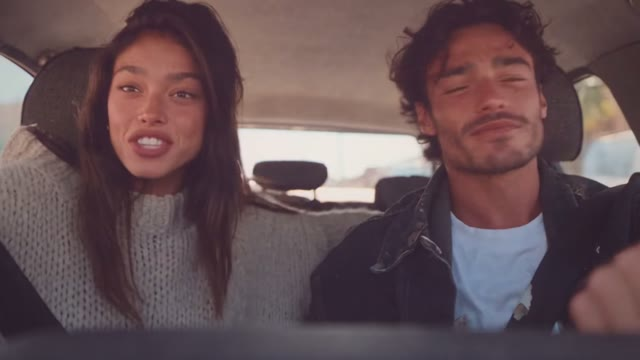
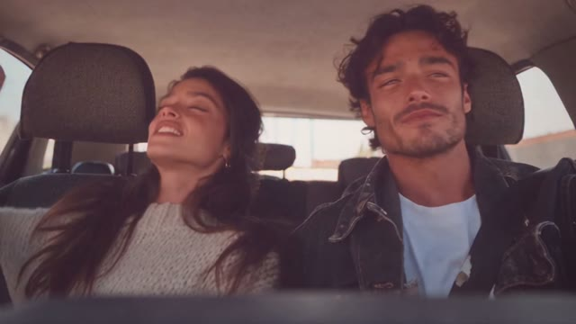
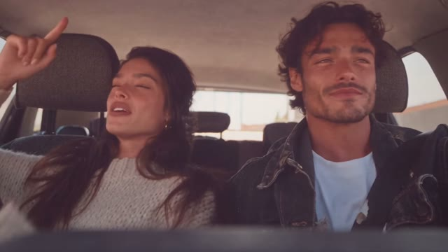
| 샷 크기 / 앵글 | 미디엄 투샷(앞좌석 2개 전체), 눈높이 정면 — 앞유리에 달린 카메라가 안쪽을 봄 |
|---|---|
| 렌즈 · 심도 | 24~28mm 광각, 딥포커스(뒷유리 밖만 보케) |
| 카메라 무빙 | 고정 + 미세 진동 |
| 화면 구도 (위치) | 조수석 = 화면 왼쪽 0~42% (밤: 비어 있음 / 낮: 여자), 운전석 = 오른쪽 55~90% (남자 얼굴 x≈68%, y≈25%), 가운데 뒤로 뒷유리·콘솔이 소실점. 낮·밤 모두 카메라 위치 100% 동일 |
| 인물 행동 · 표정 | 여자(조수석) 고개를 젖히고 눈 감은 채 목청껏 노래, 손가락 하나 들어 리듬. 남자(운전석) 데님 재킷, 흐뭇한 미소로 앞을 보며 운전 |
| 배경 · 소품 | 낡은 소형차: 천 시트, 창밖이 하얗게 날아간 한낮, 헤드레스트가 실루엣 |
| 조명 · 색 | 과노출 창 + 부드러운 확산광, 크림·파스텔, 뜬 검정, 빛 번짐(bloom) |
| 들어오는 전환 | 하드컷 (비트에 맞춘 컷, 낮↔밤 교차) |
| 소리 (BGM/SFX/대사) | 같은 노래가 이어짐 (그녀가 따라 부름) |
| 편집 의도 | 밤 샷의 ‘빈자리’가 원래 무엇이었는지 보여줌 |
seedance-2-5 — 두 사람 동시 춤·노래 동작이 가장 자연스러움kling-v3 — 표정·손동작 디테일veo-3-1 — 노래 립싱크까지 한 번에nano-banana-pro — 같은 얼굴 낮/밤·나이 차이 유지 편집seedream-5-0-pro — 실사 차 내부midjourney-v8-2 — 낮 장면 필름 무드Daytime, interior of an old beige compact hatchback with worn fabric seats, camera mounted on the windshield facing inward (dash-cam angle, 24mm, eye level, centered). Passenger on the LEFT of frame, driver on the RIGHT. Windows blown-out bright white with soft bloom, warm creamy pastel palette, faded film look, soft light, 16:9. On the LEFT, a young woman with long black hair, wearing an oversized light-grey knit sweater and small gold hoop earrings sings loudly with her head tilted back and eyes closed, one finger raised to the beat. On the RIGHT, the same man in his mid 20s with wavy dark-brown hair, wearing a denim jacket over a white T-shirt drives with a content smile.
Daytime, interior of a hamster-sized old beige hatchback, worn fabric seats, windshield-mounted inward camera, 24mm, centered. Passenger LEFT, driver RIGHT. Blown-out white windows with soft bloom, warm creamy pastel faded film look, 16:9. On the LEFT, a photorealistic anthropomorphic dwarf hamster woman with fluffy pearl-white and silver-grey fur, large dark glossy eyes with long lashes, tiny pink nose, expressive human-like facial acting, upright human-like posture and delicate hands in an oversized light-grey knit sweater sings loudly, head tilted back, eyes closed, one finger raised. On the RIGHT, a photorealistic anthropomorphic Syrian hamster man with golden-orange and cream fur, round glossy black eyes, small pink nose, soft whiskers, expressive human-like facial acting, upright human-like posture and hands with tiny pink fingers in a denim jacket and white T-shirt drives with a content smile. every prop, chair, table, car and building is scaled to hamster size so the world feels natural, real fur strand detail, cinematic live-action look, not cartoon, not 3D render, not plush toy.
She sings along to the car radio with her eyes closed, swaying her head to the beat; he smiles softly while driving, glancing at her once. Camera locked to the windshield with only subtle road vibration. Single continuous shot, no cuts.
no third person, no looking into the lens for long, no text, no logo, no warped steering wheel, no extra fingers, no camera cut inside the clip, no dashboard clutter, no daylight in night shots
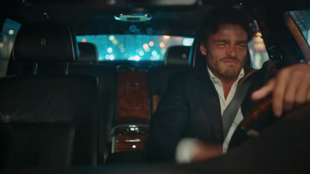
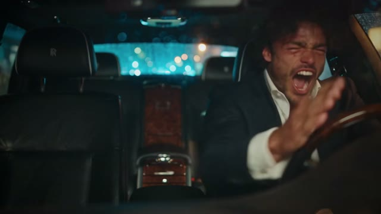
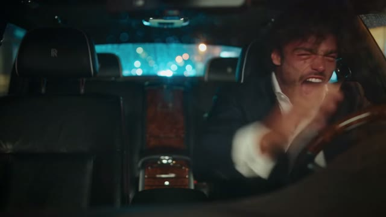
| 샷 크기 / 앵글 | 미디엄 투샷(앞좌석 2개 전체), 눈높이 정면 — 앞유리에 달린 카메라가 안쪽을 봄 |
|---|---|
| 렌즈 · 심도 | 24~28mm 광각, 딥포커스(뒷유리 밖만 보케) |
| 카메라 무빙 | 고정 + 진동, 손이 카메라 쪽으로 다가와 살짝 모션블러 |
| 화면 구도 (위치) | 조수석 = 화면 왼쪽 0~42% (밤: 비어 있음 / 낮: 여자), 운전석 = 오른쪽 55~90% (남자 얼굴 x≈68%, y≈25%), 가운데 뒤로 뒷유리·콘솔이 소실점. 낮·밤 모두 카메라 위치 100% 동일 |
| 인물 행동 · 표정 | 남자가 왼손을 들어 올려 흔들며 노래를 과장되게 따라 부름, 입을 크게 벌려 소리침 → 미소가 찡그림으로 바뀜 |
| 배경 · 소품 | 고급 세단: 검정 가죽 시트, 우드 콘솔, 뒷유리 너머 시안색 도시 불빛 보케 |
| 조명 · 색 | 저조도, 청록 역광 + 텅스텐 피부톤, 짙은 검정, 채도 낮음 |
| 들어오는 전환 | 하드컷 (비트에 맞춘 컷, 낮↔밤 교차) |
| 소리 (BGM/SFX/대사) | 같은 노래, 남자 목소리 없이 음악만 |
| 편집 의도 | 낮 샷의 ‘노래’를 혼자 재현 = 아이러니 |
kling-v3 — 혼자 하는 과장 연기·표정 변화veo-3-1 — 노래 따라 부르는 입모양(립싱크) 필요 시seedance-2-5 — 차량 내부 고정 구도 유지 + 저렴한 반복 생성nano-banana-pro — 같은 얼굴 낮/밤·나이 차이 유지 편집seedream-5-0-pro — 실사 차 내부midjourney-v8-2 — 낮 장면 필름 무드Night, interior of a luxury black sedan with black leather seats and burl-wood center console, camera mounted on the windshield facing inward (dash-cam angle, 24mm, eye level, centered between the front seats). The front passenger seat on the LEFT of frame is EMPTY in the foreground; the driver sits on the RIGHT behind the steering wheel. Through the rear window: cyan and teal city bokeh lights. Low-key lighting, teal ambient backlight, warm tungsten skin tones, crushed blacks, desaturated, 35mm film grain, 16:9. a handsome man in his early 30s with wavy dark-brown hair and light stubble, wearing a navy suit and open white shirt raises his left hand and sings along loudly with his mouth wide open, half laughing, half in pain.
Night, interior of a hamster-sized luxury black sedan, black leather seats, burl-wood console, windshield-mounted inward camera, 24mm, centered. EMPTY passenger seat on the LEFT foreground, driver on the RIGHT. Cyan city bokeh through the rear window, teal backlight, warm skin-tone fur highlights, crushed blacks, film grain, 16:9. a photorealistic anthropomorphic Syrian hamster man with golden-orange and cream fur, round glossy black eyes, small pink nose, soft whiskers, expressive human-like facial acting, upright human-like posture and hands with tiny pink fingers in a navy suit raises one paw and sings along loudly, mouth wide open, half laughing, half in pain. every prop, chair, table, car and building is scaled to hamster size so the world feels natural, real fur strand detail, cinematic live-action look, not cartoon, not 3D render, not plush toy.
He raises his free hand and belts out the song alone, exaggerated and loud; midway his grin twists into a pained grimace. Camera locked to the windshield with only subtle road vibration. Single continuous shot, no cuts.
no third person, no looking into the lens for long, no text, no logo, no warped steering wheel, no extra fingers, no camera cut inside the clip, no dashboard clutter, no daylight in night shots
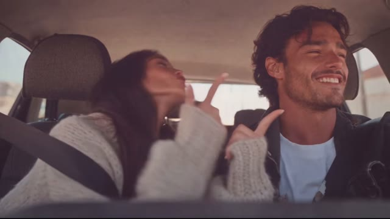
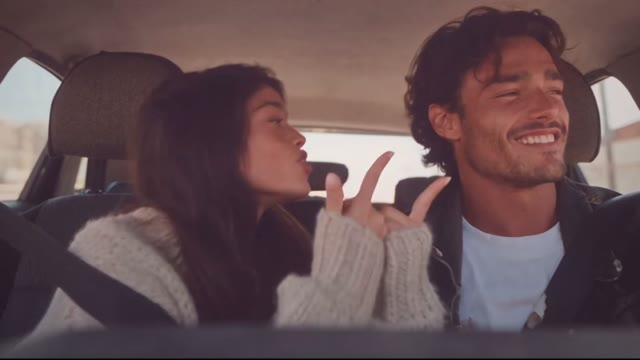
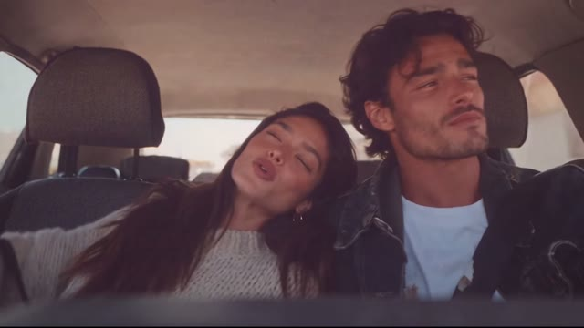
| 샷 크기 / 앵글 | 미디엄 투샷(앞좌석 2개 전체), 눈높이 정면 — 앞유리에 달린 카메라가 안쪽을 봄 |
|---|---|
| 렌즈 · 심도 | 24~28mm 광각, 딥포커스(뒷유리 밖만 보케) |
| 카메라 무빙 | 고정 + 진동 |
| 화면 구도 (위치) | 조수석 = 화면 왼쪽 0~42% (밤: 비어 있음 / 낮: 여자), 운전석 = 오른쪽 55~90% (남자 얼굴 x≈68%, y≈25%), 가운데 뒤로 뒷유리·콘솔이 소실점. 낮·밤 모두 카메라 위치 100% 동일 |
| 인물 행동 · 표정 | 여자가 입술을 내밀어 장난스럽게 손가락 포인트 춤, 남자도 한 손으로 같은 동작하며 크게 웃음 |
| 배경 · 소품 | 낡은 소형차: 천 시트, 창밖이 하얗게 날아간 한낮, 헤드레스트가 실루엣 |
| 조명 · 색 | 과노출 창 + 부드러운 확산광, 크림·파스텔, 뜬 검정, 빛 번짐(bloom) |
| 들어오는 전환 | 하드컷 (비트에 맞춘 컷, 낮↔밤 교차) |
| 소리 (BGM/SFX/대사) | 노래 후렴 쪽 에너지 상승 |
| 편집 의도 | 행복의 정점 — 다음 밤 샷의 과잉과 대비 |
seedance-2-5 — 두 사람 동시 춤·노래 동작이 가장 자연스러움kling-v3 — 표정·손동작 디테일veo-3-1 — 노래 립싱크까지 한 번에nano-banana-pro — 같은 얼굴 낮/밤·나이 차이 유지 편집seedream-5-0-pro — 실사 차 내부midjourney-v8-2 — 낮 장면 필름 무드Daytime, interior of an old beige compact hatchback with worn fabric seats, camera mounted on the windshield facing inward (dash-cam angle, 24mm, eye level, centered). Passenger on the LEFT of frame, driver on the RIGHT. Windows blown-out bright white with soft bloom, warm creamy pastel palette, faded film look, soft light, 16:9. On the LEFT, a young woman with long black hair, wearing an oversized light-grey knit sweater and small gold hoop earrings does a playful finger-pointing dance with pouted lips. On the RIGHT, the same man in his mid 20s with wavy dark-brown hair, wearing a denim jacket over a white T-shirt copies the move with one hand, laughing.
Daytime, interior of a hamster-sized old beige hatchback, worn fabric seats, windshield-mounted inward camera, 24mm, centered. Passenger LEFT, driver RIGHT. Blown-out white windows with soft bloom, warm creamy pastel faded film look, 16:9. On the LEFT, a photorealistic anthropomorphic dwarf hamster woman with fluffy pearl-white and silver-grey fur, large dark glossy eyes with long lashes, tiny pink nose, expressive human-like facial acting, upright human-like posture and delicate hands does a playful finger-pointing dance with pouted lips. On the RIGHT, a photorealistic anthropomorphic Syrian hamster man with golden-orange and cream fur, round glossy black eyes, small pink nose, soft whiskers, expressive human-like facial acting, upright human-like posture and hands with tiny pink fingers copies the move with one paw, laughing. every prop, chair, table, car and building is scaled to hamster size so the world feels natural, real fur strand detail, cinematic live-action look, not cartoon, not 3D render, not plush toy.
Both do a goofy finger-pointing dance in sync to the chorus, laughing, bouncing in their seats. Camera locked to the windshield with only subtle road vibration. Single continuous shot, no cuts.
no third person, no looking into the lens for long, no text, no logo, no warped steering wheel, no extra fingers, no camera cut inside the clip, no dashboard clutter, no daylight in night shots
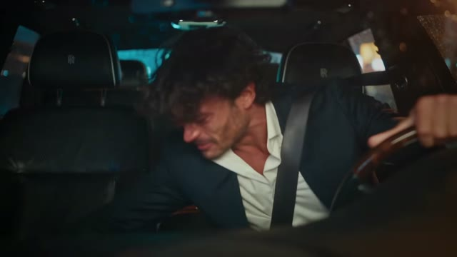
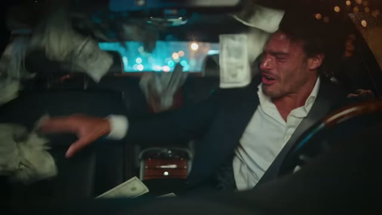
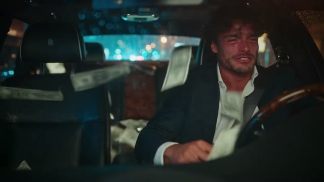
| 샷 크기 / 앵글 | 미디엄 투샷(앞좌석 2개 전체), 눈높이 정면 — 앞유리에 달린 카메라가 안쪽을 봄 |
|---|---|
| 렌즈 · 심도 | 24~28mm 광각, 딥포커스(뒷유리 밖만 보케) |
| 카메라 무빙 | 고정, 지폐가 렌즈 앞을 스쳐 전경 모션블러 |
| 화면 구도 (위치) | 조수석 = 화면 왼쪽 0~42% (밤: 비어 있음 / 낮: 여자), 운전석 = 오른쪽 55~90% (남자 얼굴 x≈68%, y≈25%), 가운데 뒤로 뒷유리·콘솔이 소실점. 낮·밤 모두 카메라 위치 100% 동일 |
| 인물 행동 · 표정 | 남자가 몸을 숙여 조수석 쪽에서 돈다발을 집어 공중에 던짐 → 차 안 가득 달러 지폐가 흩날림, 쓴웃음 |
| 배경 · 소품 | 고급 세단: 검정 가죽 시트, 우드 콘솔, 뒷유리 너머 시안색 도시 불빛 보케 |
| 조명 · 색 | 저조도, 청록 역광 + 텅스텐 피부톤, 짙은 검정, 채도 낮음 |
| 들어오는 전환 | 하드컷 (비트에 맞춘 컷, 낮↔밤 교차) |
| 소리 (BGM/SFX/대사) | 지폐 촤르륵 효과음(4.5s) + 노래 |
| 편집 의도 | 돈은 넘치지만 옆자리는 비어 있음 — 가장 화려하고 가장 공허한 샷 |
minimax-h3-max — 지폐 수십 장의 공중 물리·흩날림이 가장 자연스러움seedance-2-5 — 인물 동작 + 파티클 동시kling-v3 — 표정(쓴웃음) 디테일nano-banana-pro — 같은 얼굴 낮/밤·나이 차이 유지 편집seedream-5-0-pro — 실사 차 내부midjourney-v8-2 — 낮 장면 필름 무드Night, interior of a luxury black sedan with black leather seats and burl-wood center console, camera mounted on the windshield facing inward (dash-cam angle, 24mm, eye level, centered between the front seats). The front passenger seat on the LEFT of frame is EMPTY in the foreground; the driver sits on the RIGHT behind the steering wheel. Through the rear window: cyan and teal city bokeh lights. Low-key lighting, teal ambient backlight, warm tungsten skin tones, crushed blacks, desaturated, 35mm film grain, 16:9. a handsome man in his early 30s with wavy dark-brown hair and light stubble, wearing a navy suit and open white shirt leans over and throws a thick stack of US dollar bills into the air; bills flutter all around the cabin.
Night, interior of a hamster-sized luxury black sedan, black leather seats, burl-wood console, windshield-mounted inward camera, 24mm, centered. EMPTY passenger seat on the LEFT foreground, driver on the RIGHT. Cyan city bokeh through the rear window, teal backlight, warm skin-tone fur highlights, crushed blacks, film grain, 16:9. a photorealistic anthropomorphic Syrian hamster man with golden-orange and cream fur, round glossy black eyes, small pink nose, soft whiskers, expressive human-like facial acting, upright human-like posture and hands with tiny pink fingers in a navy suit leans over and throws a thick stack of tiny dollar bills into the air; bills flutter all around the cabin. every prop, chair, table, car and building is scaled to hamster size so the world feels natural, real fur strand detail, cinematic live-action look, not cartoon, not 3D render, not plush toy.
He grabs a stack of cash from the passenger seat and flings it up; dozens of bills flutter and drift through the cabin in slow realistic physics, some passing close to the lens; he laughs bitterly. Camera locked to the windshield with only subtle road vibration. Single continuous shot, no cuts.
no third person, no looking into the lens for long, no text, no logo, no warped steering wheel, no extra fingers, no camera cut inside the clip, no dashboard clutter, no daylight in night shots
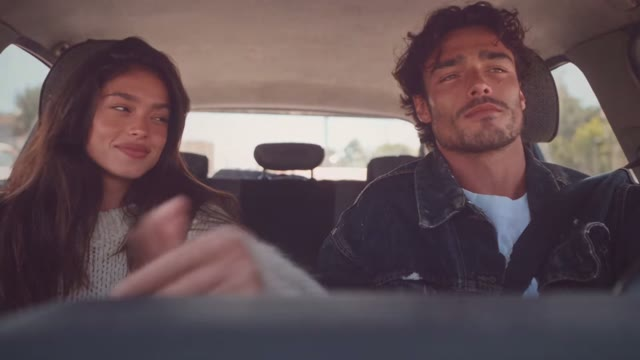
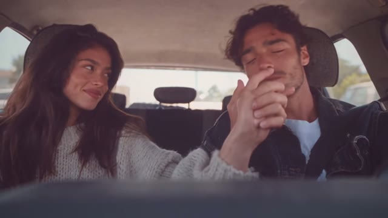
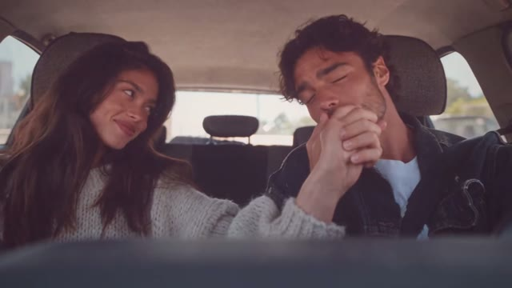
| 샷 크기 / 앵글 | 미디엄 투샷(앞좌석 2개 전체), 눈높이 정면 — 앞유리에 달린 카메라가 안쪽을 봄 |
|---|---|
| 렌즈 · 심도 | 24~28mm 광각, 딥포커스(뒷유리 밖만 보케) |
| 카메라 무빙 | 고정 + 진동 |
| 화면 구도 (위치) | 조수석 = 화면 왼쪽 0~42% (밤: 비어 있음 / 낮: 여자), 운전석 = 오른쪽 55~90% (남자 얼굴 x≈68%, y≈25%), 가운데 뒤로 뒷유리·콘솔이 소실점. 낮·밤 모두 카메라 위치 100% 동일 |
| 인물 행동 · 표정 | 여자가 남자 손을 끌어당기고, 남자가 눈을 감고 그녀 손등에 입맞춤, 여자는 사랑스럽게 바라봄 |
| 배경 · 소품 | 낡은 소형차: 천 시트, 창밖이 하얗게 날아간 한낮, 헤드레스트가 실루엣 |
| 조명 · 색 | 과노출 창 + 부드러운 확산광, 크림·파스텔, 뜬 검정, 빛 번짐(bloom) |
| 들어오는 전환 | 하드컷 (비트에 맞춘 컷, 낮↔밤 교차) |
| 소리 (BGM/SFX/대사) | 노래 |
| 편집 의도 | 가장 친밀한 순간 → 다음 밤 샷의 ‘빈자리에 말 걸기’와 짝 |
seedance-2-5 — 두 사람 동시 춤·노래 동작이 가장 자연스러움kling-v3 — 표정·손동작 디테일veo-3-1 — 노래 립싱크까지 한 번에nano-banana-pro — 같은 얼굴 낮/밤·나이 차이 유지 편집seedream-5-0-pro — 실사 차 내부midjourney-v8-2 — 낮 장면 필름 무드Daytime, interior of an old beige compact hatchback with worn fabric seats, camera mounted on the windshield facing inward (dash-cam angle, 24mm, eye level, centered). Passenger on the LEFT of frame, driver on the RIGHT. Windows blown-out bright white with soft bloom, warm creamy pastel palette, faded film look, soft light, 16:9. On the LEFT, a young woman with long black hair, wearing an oversized light-grey knit sweater and small gold hoop earrings pulls his hand toward her; on the RIGHT, the same man in his mid 20s with wavy dark-brown hair, wearing a denim jacket over a white T-shirt kisses the back of her hand with eyes closed while she looks at him lovingly.
Daytime, interior of a hamster-sized old beige hatchback, worn fabric seats, windshield-mounted inward camera, 24mm, centered. Passenger LEFT, driver RIGHT. Blown-out white windows with soft bloom, warm creamy pastel faded film look, 16:9. On the LEFT, a photorealistic anthropomorphic dwarf hamster woman with fluffy pearl-white and silver-grey fur, large dark glossy eyes with long lashes, tiny pink nose, expressive human-like facial acting, upright human-like posture and delicate hands pulls his paw toward her; on the RIGHT, a photorealistic anthropomorphic Syrian hamster man with golden-orange and cream fur, round glossy black eyes, small pink nose, soft whiskers, expressive human-like facial acting, upright human-like posture and hands with tiny pink fingers kisses the back of her paw with eyes closed while she looks at him lovingly. every prop, chair, table, car and building is scaled to hamster size so the world feels natural, real fur strand detail, cinematic live-action look, not cartoon, not 3D render, not plush toy.
She reaches over and pulls his hand to her; he closes his eyes and kisses the back of her hand; she beams at him. Camera locked to the windshield with only subtle road vibration. Single continuous shot, no cuts.
no third person, no looking into the lens for long, no text, no logo, no warped steering wheel, no extra fingers, no camera cut inside the clip, no dashboard clutter, no daylight in night shots
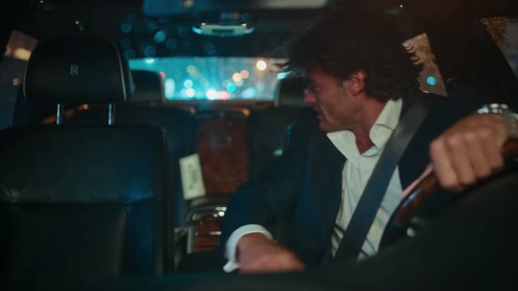
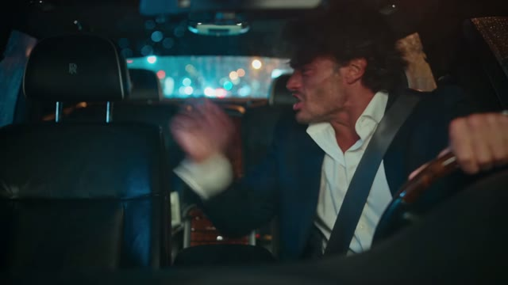
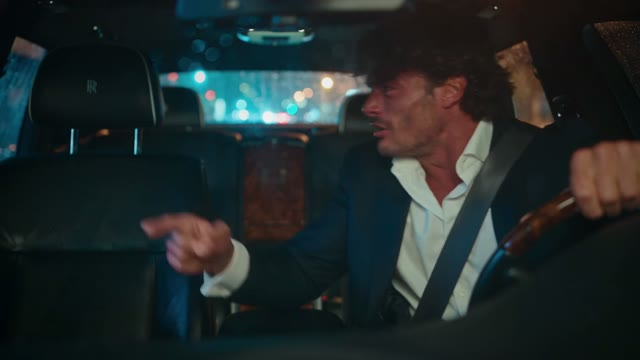
| 샷 크기 / 앵글 | 미디엄 투샷(앞좌석 2개 전체), 눈높이 정면 — 앞유리에 달린 카메라가 안쪽을 봄 |
|---|---|
| 렌즈 · 심도 | 24~28mm 광각, 딥포커스(뒷유리 밖만 보케) |
| 카메라 무빙 | 고정 + 진동 |
| 화면 구도 (위치) | 조수석 = 화면 왼쪽 0~42% (밤: 비어 있음 / 낮: 여자), 운전석 = 오른쪽 55~90% (남자 얼굴 x≈68%, y≈25%), 가운데 뒤로 뒷유리·콘솔이 소실점. 낮·밤 모두 카메라 위치 100% 동일 |
| 인물 행동 · 표정 | 남자가 빈 조수석 쪽으로 몸을 돌려 손가락질하며 무언가 외침 — 마치 그녀가 앉아 있는 것처럼 |
| 배경 · 소품 | 고급 세단: 검정 가죽 시트, 우드 콘솔, 뒷유리 너머 시안색 도시 불빛 보케 |
| 조명 · 색 | 저조도, 청록 역광 + 텅스텐 피부톤, 짙은 검정, 채도 낮음 |
| 들어오는 전환 | 하드컷 (비트에 맞춘 컷, 낮↔밤 교차) |
| 소리 (BGM/SFX/대사) | 노래 |
| 편집 의도 | 상실의 확정. 관객은 빈 시트를 보며 낮 샷의 그녀를 떠올림(매칭 프레이밍의 힘) |
kling-v3 — 혼자 하는 과장 연기·표정 변화veo-3-1 — 노래 따라 부르는 입모양(립싱크) 필요 시seedance-2-5 — 차량 내부 고정 구도 유지 + 저렴한 반복 생성nano-banana-pro — 같은 얼굴 낮/밤·나이 차이 유지 편집seedream-5-0-pro — 실사 차 내부midjourney-v8-2 — 낮 장면 필름 무드Night, interior of a luxury black sedan with black leather seats and burl-wood center console, camera mounted on the windshield facing inward (dash-cam angle, 24mm, eye level, centered between the front seats). The front passenger seat on the LEFT of frame is EMPTY in the foreground; the driver sits on the RIGHT behind the steering wheel. Through the rear window: cyan and teal city bokeh lights. Low-key lighting, teal ambient backlight, warm tungsten skin tones, crushed blacks, desaturated, 35mm film grain, 16:9. a handsome man in his early 30s with wavy dark-brown hair and light stubble, wearing a navy suit and open white shirt turns toward the EMPTY passenger seat and points at it, talking loudly as if someone were sitting there.
Night, interior of a hamster-sized luxury black sedan, black leather seats, burl-wood console, windshield-mounted inward camera, 24mm, centered. EMPTY passenger seat on the LEFT foreground, driver on the RIGHT. Cyan city bokeh through the rear window, teal backlight, warm skin-tone fur highlights, crushed blacks, film grain, 16:9. a photorealistic anthropomorphic Syrian hamster man with golden-orange and cream fur, round glossy black eyes, small pink nose, soft whiskers, expressive human-like facial acting, upright human-like posture and hands with tiny pink fingers in a navy suit turns toward the EMPTY passenger seat and points at it, talking loudly as if someone were there. every prop, chair, table, car and building is scaled to hamster size so the world feels natural, real fur strand detail, cinematic live-action look, not cartoon, not 3D render, not plush toy.
He turns to the empty passenger seat, points and speaks passionately to no one, as if she were still sitting there, then his face falls. Camera locked to the windshield with only subtle road vibration. Single continuous shot, no cuts.
no third person, no looking into the lens for long, no text, no logo, no warped steering wheel, no extra fingers, no camera cut inside the clip, no dashboard clutter, no daylight in night shots
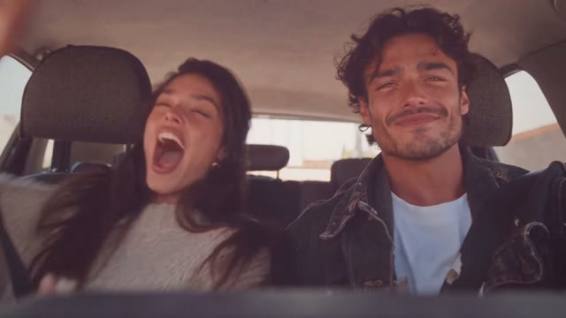
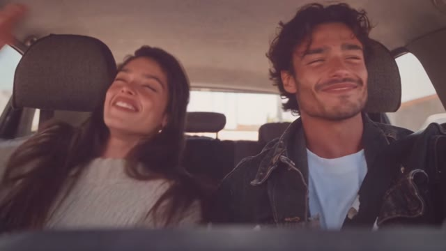
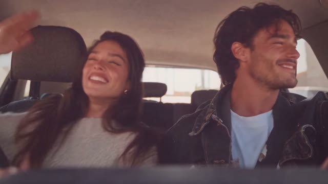
| 샷 크기 / 앵글 | 미디엄 투샷(앞좌석 2개 전체), 눈높이 정면 — 앞유리에 달린 카메라가 안쪽을 봄 |
|---|---|
| 렌즈 · 심도 | 24~28mm 광각, 딥포커스(뒷유리 밖만 보케) |
| 카메라 무빙 | 고정 + 진동 |
| 화면 구도 (위치) | 조수석 = 화면 왼쪽 0~42% (밤: 비어 있음 / 낮: 여자), 운전석 = 오른쪽 55~90% (남자 얼굴 x≈68%, y≈25%), 가운데 뒤로 뒷유리·콘솔이 소실점. 낮·밤 모두 카메라 위치 100% 동일 |
| 인물 행동 · 표정 | 여자가 손을 흔들며 활짝 웃음, 남자는 그녀를 보며 흐뭇한 미소 |
| 배경 · 소품 | 낡은 소형차: 천 시트, 창밖이 하얗게 날아간 한낮, 헤드레스트가 실루엣 |
| 조명 · 색 | 과노출 창 + 부드러운 확산광, 크림·파스텔, 뜬 검정, 빛 번짐(bloom) |
| 들어오는 전환 | 하드컷 (비트에 맞춘 컷, 낮↔밤 교차) |
| 소리 (BGM/SFX/대사) | 노래 |
| 편집 의도 | 마지막 행복 샷 — 바로 다음이 붕괴 |
seedance-2-5 — 두 사람 동시 춤·노래 동작이 가장 자연스러움kling-v3 — 표정·손동작 디테일veo-3-1 — 노래 립싱크까지 한 번에nano-banana-pro — 같은 얼굴 낮/밤·나이 차이 유지 편집seedream-5-0-pro — 실사 차 내부midjourney-v8-2 — 낮 장면 필름 무드Daytime, interior of an old beige compact hatchback with worn fabric seats, camera mounted on the windshield facing inward (dash-cam angle, 24mm, eye level, centered). Passenger on the LEFT of frame, driver on the RIGHT. Windows blown-out bright white with soft bloom, warm creamy pastel palette, faded film look, soft light, 16:9. On the LEFT, a young woman with long black hair, wearing an oversized light-grey knit sweater and small gold hoop earrings waves her hand and bursts into laughter; on the RIGHT, the same man in his mid 20s with wavy dark-brown hair, wearing a denim jacket over a white T-shirt smiles at her.
Daytime, interior of a hamster-sized old beige hatchback, worn fabric seats, windshield-mounted inward camera, 24mm, centered. Passenger LEFT, driver RIGHT. Blown-out white windows with soft bloom, warm creamy pastel faded film look, 16:9. On the LEFT, a photorealistic anthropomorphic dwarf hamster woman with fluffy pearl-white and silver-grey fur, large dark glossy eyes with long lashes, tiny pink nose, expressive human-like facial acting, upright human-like posture and delicate hands waves her paw and bursts into laughter; on the RIGHT, a photorealistic anthropomorphic Syrian hamster man with golden-orange and cream fur, round glossy black eyes, small pink nose, soft whiskers, expressive human-like facial acting, upright human-like posture and hands with tiny pink fingers smiles at her. every prop, chair, table, car and building is scaled to hamster size so the world feels natural, real fur strand detail, cinematic live-action look, not cartoon, not 3D render, not plush toy.
She waves her hand in the air and bursts out laughing mid-song; he watches her with a warm smile. Camera locked to the windshield with only subtle road vibration. Single continuous shot, no cuts.
no third person, no looking into the lens for long, no text, no logo, no warped steering wheel, no extra fingers, no camera cut inside the clip, no dashboard clutter, no daylight in night shots
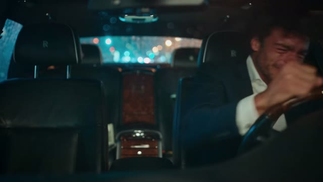
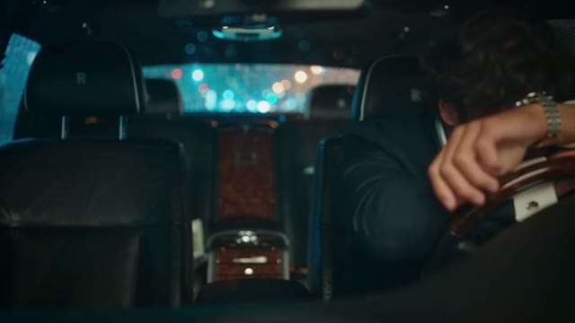
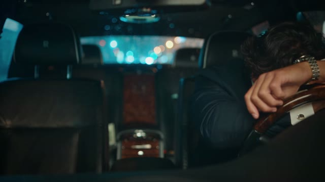
| 샷 크기 / 앵글 | 미디엄 투샷(앞좌석 2개 전체), 눈높이 정면 — 앞유리에 달린 카메라가 안쪽을 봄 |
|---|---|
| 렌즈 · 심도 | 24~28mm 광각, 딥포커스(뒷유리 밖만 보케) |
| 카메라 무빙 | 고정, 1.92초 가장 긴 홀드 |
| 화면 구도 (위치) | 조수석 = 화면 왼쪽 0~42% (밤: 비어 있음 / 낮: 여자), 운전석 = 오른쪽 55~90% (남자 얼굴 x≈68%, y≈25%), 가운데 뒤로 뒷유리·콘솔이 소실점. 낮·밤 모두 카메라 위치 100% 동일 |
| 인물 행동 · 표정 | 남자가 웃다가 무너져 핸들 위에 올린 팔에 얼굴을 묻음, 손목의 고급 시계가 보임, 어깨 들썩 |
| 배경 · 소품 | 고급 세단: 검정 가죽 시트, 우드 콘솔, 뒷유리 너머 시안색 도시 불빛 보케 |
| 조명 · 색 | 저조도, 청록 역광 + 텅스텐 피부톤, 짙은 검정, 채도 낮음 |
| 들어오는 전환 | 하드컷 (비트에 맞춘 컷, 낮↔밤 교차) |
| 소리 (BGM/SFX/대사) | 노래가 계속되다 끝에서 0.5초 페이드 |
| 편집 의도 | 가장 긴 샷으로 감정 착지 — 여기서 캡션 질문이 읽힘 |
kling-v3 — 웃음→울음 전환 연기가 가장 설득력veo-3-1 — 흐느끼는 호흡까지 자연스럽게seedance-2-5 — 대안nano-banana-pro — 같은 얼굴 낮/밤·나이 차이 유지 편집seedream-5-0-pro — 실사 차 내부midjourney-v8-2 — 낮 장면 필름 무드Night, interior of a luxury black sedan with black leather seats and burl-wood center console, camera mounted on the windshield facing inward (dash-cam angle, 24mm, eye level, centered between the front seats). The front passenger seat on the LEFT of frame is EMPTY in the foreground; the driver sits on the RIGHT behind the steering wheel. Through the rear window: cyan and teal city bokeh lights. Low-key lighting, teal ambient backlight, warm tungsten skin tones, crushed blacks, desaturated, 35mm film grain, 16:9. a handsome man in his early 30s with wavy dark-brown hair and light stubble, wearing a navy suit and open white shirt laughs briefly then breaks down, burying his face in his arm resting on the steering wheel; a luxury watch visible on his wrist.
Night, interior of a hamster-sized luxury black sedan, black leather seats, burl-wood console, windshield-mounted inward camera, 24mm, centered. EMPTY passenger seat on the LEFT foreground, driver on the RIGHT. Cyan city bokeh through the rear window, teal backlight, warm skin-tone fur highlights, crushed blacks, film grain, 16:9. a photorealistic anthropomorphic Syrian hamster man with golden-orange and cream fur, round glossy black eyes, small pink nose, soft whiskers, expressive human-like facial acting, upright human-like posture and hands with tiny pink fingers in a navy suit laughs briefly then breaks down, burying his face in his arm on the steering wheel; a tiny luxury watch on his wrist. every prop, chair, table, car and building is scaled to hamster size so the world feels natural, real fur strand detail, cinematic live-action look, not cartoon, not 3D render, not plush toy.
His laugh cracks into a sob; he lowers his head onto his forearm on the steering wheel and his shoulders shake; hold on this for the rest of the shot. Camera locked to the windshield with only subtle road vibration. Single continuous shot, no cuts.
no third person, no looking into the lens for long, no text, no logo, no warped steering wheel, no extra fingers, no camera cut inside the clip, no dashboard clutter, no daylight in night shots
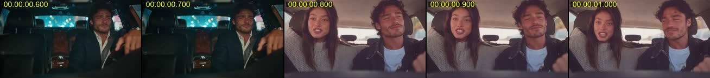
전환 효과가 전혀 없는 하드컷. 대신 ① 컷이 음악 비트 위에 떨어지고(±1프레임) ② 낮·밤 카메라 위치가 똑같아서, 컷이 ‘시간 점프’처럼 느껴진다. 밤→낮은 밝기가 급변해 눈이 번쩍하는 ‘플래시 효과’까지 공짜로 생긴다. 컷 간격: 0.84/0.92/1.48/0.92/1.44/0.96/1.44/0.96/1.92초 (= 21/23/37/23/36/24/36/24/48 프레임 @25fps).
각 샷을 trim=0:길이 로 자른 뒤 concat=n=9 (아래 9번 스크립트). 비트 확인: ffmpeg -i bgm.wav -af "silencedetect" 대신 onset 분석 or DAW에서 125 BPM 그리드에 컷을 맞춘다.
각 샷 <video class="clip">를 같은 트랙에 data-start를 누적 배치 (0, 0.84, 1.76, 3.24, 4.16, 5.60, 6.56, 8.00, 8.96). 전환 애니메이션 없음. npx hyperframes beats bgm.mp3 로 비트 타임을 뽑아 컷 시작점을 비트에 스냅.
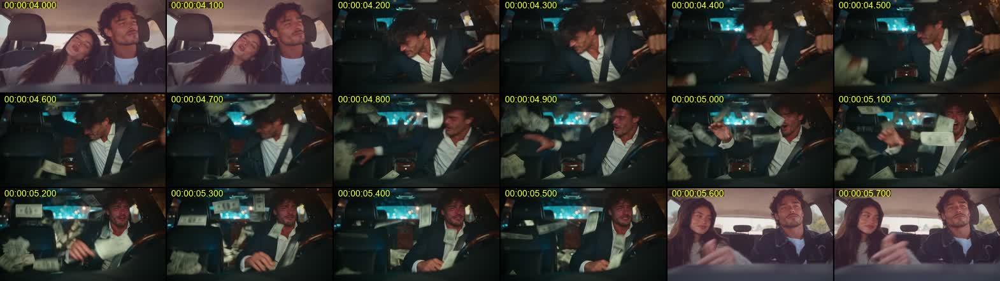
지폐가 렌즈 바로 앞을 스쳐 지나가며 화면을 잠깐 가린다. 다음 컷(5.60 낮)으로 넘어가기 직전 화면이 복잡해졌다가 밝은 낮으로 확 열려 대비가 극대화된다. AI 생성 시 ‘some bills pass close to the lens’를 꼭 넣을 것.
생성 결과에 지폐가 부족하면: 녹색 배경 지폐 소스(sfx_bills.mov)를 overlay → [v5][bills]overlay=0:0:enable='between(t,0.3,1.4)'
지폐 PNG 20장을 절대위치로 깔고 GSAP로 y: -200→1200, rotation 랜덤(시드 고정) 1.2초 낙하. Math.random 금지 → 시드 배열 사용.
주파수 그림이 처음부터 끝까지 꽉 찬 밝은 팝(보컬 대역이 두꺼움). 규칙적인 세로줄 = 드럼 비트, 간격 0.48초 → 약 125 BPM. 한 곡이 낮·밤 전체를 관통하는 ‘사운드 브릿지’라서 교차편집이 한 이야기로 묶인다. 낮에는 그녀가, 밤에는 그가 같은 노래를 부른다.
| 시간 | 소리 | 제작 방법 |
|---|---|---|
| 0.0–10.88s | BGM: 밝은 싱어롱 인디팝/2000년대 팝 느낌, 125 BPM, 후렴 에너지 | text2music 생성 or 라이선스 음원, 컷 포인트를 비트에 맞춤 |
| 4.5s | 지폐 촤르륵 + 공기 휙 | sfx_cash.wav, 음악 대비 -6dB |
| 밤 샷 전체 | 고급차 저음 로드 노이즈 (아주 작게) | sfx_road.wav -30dB, 밤 샷 구간에만 enable |
| 10.3–10.88s | 음악 0.58초 페이드아웃 | afade=out |
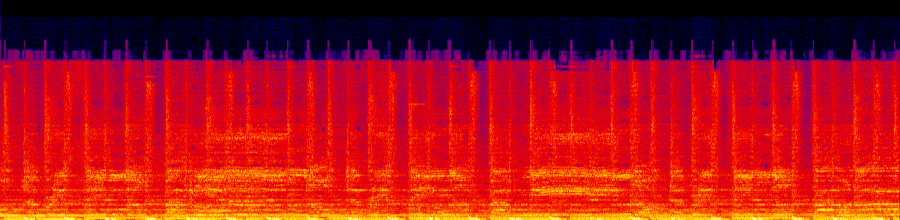
Upbeat feel-good indie pop sing-along, 125 BPM, bright acoustic guitar strums, handclaps, punchy kick on every beat, catchy la-la-la hook, nostalgic early-2000s road-trip vibe, warm male and female group vocals humming, major key, energetic chorus starting at 0:02, 15 seconds
| 요소 | 설정 |
|---|---|
| 밤 (현재) | 청록/시안 그림자 + 텅스텐 주황 피부 (틸&오렌지), 검정 뭉갬, 채도 -15% |
| 낮 (과거) | 크림·버터 톤, 창문 과노출 + bloom, 검정 들림, 채도 -10%, 살짝 소프트 |
| 공통 | 35mm 그레인, 16:9, 25fps |
| 대비 원칙 | 밤→낮 컷에서 밝기가 크게 튀어야 ‘과거가 번쩍 떠오르는’ 느낌이 난다 — 낮을 일부러 1스톱 밝게 |
| 교차편집 (Cross-cutting / Parallel editing) | 두 시간·장소를 번갈아 보여줘 비교·대비를 만든다 |
| 매칭 프레이밍 (Matched framing) | 두 장면의 카메라 위치·구도를 같게 해 ‘달라진 것’만 눈에 띄게 함 (여기선 빈 조수석) |
| 비트 컷 (Cutting on the beat) | 음악 박자에 맞춰 컷 → 리듬감·몰입 |
| 사운드 브릿지 (Sound bridge) | 한 곡이 여러 장면을 이어 하나의 흐름으로 묶음 |
| 엔딩 홀드 (Ending hold) | 마지막 샷을 길게 잡아 감정이 가라앉을 시간을 줌 |
| 시리즈 훅 (Part 2) | 제목에 편수를 붙여 이전 편·프로필 방문을 유도 |
# === P2 낮/밤 교차편집 (25fps, 1920x1080) === # 준비물: s01~s09.mp4 (홀수=밤, 짝수=낮), bgm.wav(125BPM), sfx_cash.wav NIGHT="colorbalance=rs=-0.08:bs=0.10:rm=-0.03:bm=0.05:rh=0.06:bh=-0.04,curves=all='0/0 0.15/0.07 0.5/0.45 1/0.95',eq=saturation=0.85" DAY="curves=all='0/0.06 0.5/0.56 1/0.99',colorbalance=rs=0.05:gs=0.02:bs=-0.05,eq=saturation=0.9:brightness=0.04,gblur=sigma=0.6" N="scale=1920:1080:force_original_aspect_ratio=increase,crop=1920:1080,fps=25,setsar=1" ffmpeg -y -i s01.mp4 -i s02.mp4 -i s03.mp4 -i s04.mp4 -i s05.mp4 -i s06.mp4 -i s07.mp4 -i s08.mp4 -i s09.mp4 \ -i bgm.wav -i sfx_cash.wav -filter_complex " [0:v]$N,trim=0:0.84,setpts=PTS-STARTPTS,$NIGHT[v1]; [1:v]$N,trim=0:0.92,setpts=PTS-STARTPTS,$DAY[v2]; [2:v]$N,trim=0:1.48,setpts=PTS-STARTPTS,$NIGHT[v3]; [3:v]$N,trim=0:0.92,setpts=PTS-STARTPTS,$DAY[v4]; [4:v]$N,trim=0:1.44,setpts=PTS-STARTPTS,$NIGHT[v5]; [5:v]$N,trim=0:0.96,setpts=PTS-STARTPTS,$DAY[v6]; [6:v]$N,trim=0:1.44,setpts=PTS-STARTPTS,$NIGHT[v7]; [7:v]$N,trim=0:0.96,setpts=PTS-STARTPTS,$DAY[v8]; [8:v]$N,trim=0:1.92,setpts=PTS-STARTPTS,$NIGHT[v9]; [v1][v2][v3][v4][v5][v6][v7][v8][v9]concat=n=9:v=1:a=0,noise=alls=7:allf=t,format=yuv420p[v]; [9:a]atrim=0:10.88,afade=t=out:st=10.3:d=0.58[m]; [10:a]adelay=4450|4450,volume=0.5[c]; [m][c]amix=inputs=2:normalize=0:duration=first,loudnorm=I=-14:TP=-1:LRA=11[a]" \ -map "[v]" -map "[a]" -c:v libx264 -preset slow -crf 17 -pix_fmt yuv420p -r 25 -c:a aac -b:a 192k -movflags +faststart P2_car_final.mp4 # 팁: bgm의 첫 다운비트가 0.26s에 오도록 bgm.wav 앞을 잘라 두면 컷이 원본처럼 비트 위에 떨어진다 (atrim=start=오프셋).
/hyperframes 1920x1080, 25fps, 10.88초 컴포지션 'p2-car'. 9개 샷을 같은 트랙0에 하드컷으로 배치: s01 0.00(0.84) · s02 0.84(0.92) · s03 1.76(1.48) · s04 3.24(0.92) · s05 4.16(1.44) · s06 5.60(0.96) · s07 6.56(1.44) · s08 8.00(0.96) · s09 8.96(1.92). - 홀수(밤) 샷 래퍼에 CSS filter: saturate(.85) contrast(1.1) + 청록 오버레이(mix-blend-mode: color, rgba(0,90,110,.18)). - 짝수(낮) 샷 래퍼: brightness(1.08) saturate(.9) + 크림 오버레이(rgba(255,225,180,.12), soft-light). - 전 구간 그레인 오버레이 0.15. 전환 애니메이션 없음(하드컷). - 오디오: bgm.mp3 id=bgm 0~10.88, 10.3부터 페이드아웃(data-automation); sfx_cash.mp3 id=cash data-start=4.45 data-volume=0.5. - npx hyperframes beats bgm.mp3 로 비트를 확인해 컷이 비트와 ±1프레임 안인지 보고. - check 0 findings → snapshot 0.4/2.5/4.9/7.2/10.0s → 렌더는 승인 후.
<div id="root" data-composition-id="p2-car" data-width="1920" data-height="1080" data-duration="10.88"> <div id="w1" class="clip night" data-start="0" data-duration="0.84" data-track-index="0"><video id="c1" src="s01.mp4" muted></video></div> <div id="w2" class="clip day" data-start="0.84" data-duration="0.92" data-track-index="0"><video id="c2" src="s02.mp4" muted></video></div> <div id="w3" class="clip night" data-start="1.76" data-duration="1.48" data-track-index="0"><video id="c3" src="s03.mp4" muted></video></div> <div id="w4" class="clip day" data-start="3.24" data-duration="0.92" data-track-index="0"><video id="c4" src="s04.mp4" muted></video></div> <div id="w5" class="clip night" data-start="4.16" data-duration="1.44" data-track-index="0"><video id="c5" src="s05.mp4" muted></video></div> <div id="w6" class="clip day" data-start="5.60" data-duration="0.96" data-track-index="0"><video id="c6" src="s06.mp4" muted></video></div> <div id="w7" class="clip night" data-start="6.56" data-duration="1.44" data-track-index="0"><video id="c7" src="s07.mp4" muted></video></div> <div id="w8" class="clip day" data-start="8.00" data-duration="0.96" data-track-index="0"><video id="c8" src="s08.mp4" muted></video></div> <div id="w9" class="clip night" data-start="8.96" data-duration="1.92" data-track-index="0"><video id="c9" src="s09.mp4" muted></video></div> <audio id="bgm" src="bgm.mp3" data-start="0" data-duration="10.88" data-volume="1"></audio> <audio id="cash" src="sfx_cash.mp3" data-start="4.45" data-duration="1.2" data-volume="0.5"></audio> </div>
[작업] 인스타 릴스 'I MADE IT. SHE'S NOT HERE. (Part 2)'를 햄스터 커플 버전으로 1:1 재현한다.
[수정 가능 범위] 새 작업 폴더 안 파일 생성만. 🔴 업로드·결제·기존 파일 삭제는 승인 전 금지.
1) 캐릭터 시트(nano-banana-pro): 남자 햄스터 '낮'(데님재킷+흰티, 20대 느낌) / '밤'(네이비 정장+흰셔츠, 30대 느낌, 같은 얼굴) / 여자 햄스터(회색 오버사이즈 니트, 금 링 귀걸이).
2) 차 세트 2개 고정 이미지: 낮=낡은 베이지 해치백, 밤=검정 가죽 고급 세단. 카메라는 둘 다 '앞유리에 달린 안쪽 방향 24mm, 가운데'. 조수석=화면 왼쪽, 운전석=오른쪽.
3) 이 페이지 S1~S9의 ②동물 이미지 프롬프트로 키프레임 9장 → 모든 장의 운전자 얼굴 위치가 x≈68%, y≈25% 로 같은지 확인(매칭 프레이밍이 생명).
4) 영상: 낮=seedance-2-5, 밤=kling-v3, S5 지폐=minimax-h3-max. 각 3회 생성, 가장 좋은 것 선택. 길이는 각 샷 길이+1초 여유.
5) 음악: 이 페이지 BGM 프롬프트(125 BPM)로 생성 → 첫 다운비트 위치 확인.
6) 편집: 9번 FFmpeg 스크립트 실행 → P2_car_final.mp4 (10.88초). 컷이 비트 위에 있는지 파형 스크린샷으로 증명.
7) 캡션 초안: 'I made it. She's not here. (Part 2)' 구조 + 마지막 줄 질문형 CTA('어떤 삶을 고를래?') 3안. Part 1도 같은 방식으로 만들 계획표 첨부.kling-v3 / kling-v3-omni — 얼굴 미세 연기(눈물·굳는 미소), 손 연기, 첫/끝 프레임 지정(매치컷). omni는 캐릭터 참조 이미지로 얼굴 고정seedance-2-5 / seedance-2-0 — 다인물 동작(춤·달리기), 카메라 무빙, 멀티샷 일관성. 가성비 좋은 주력minimax-h3 / h3-max (Hailuo) — 물리·파티클(샴페인 스플래시, 지폐 비, 머리카락·드레스 휘날림), 자연스러운 미세 움직임hailuo-2-3 — 짧은 미세 동작 원테이크, 저렴한 대량 테스트veo-3-1 — 대사 립싱크 + 앰비언스 사운드 동시 생성, 필름 질감. 대사 있는 샷 1순위gemini-omni-1-1-flash (Google Omni) — 대사/소리 포함 빠른 초안, 참조 이미지 기반 일관성 테스트nano-banana-pro — 캐릭터 시트 → 샷별 키프레임 편집(얼굴·의상 고정), 사람→동물 교체 편집 1순위midjourney-v8-2 — 필름 룩·조명·분위기 최상. 첫 무드 키프레임용seedream-5-0-pro — 고해상도 실사 키프레임, 참조 여러 장 합성flux-kontext-max — 기존 프레임 부분 수정(손 위치 유지한 채 배경만 교체 = 매치컷 제작)gpt-image-2-5 — 반지·시계·지폐 같은 소품 디테일 정확도기간 대비 3위 · 하루 36,117 좋아요 · 좋아요 총량 2위@alexnazarov.ai (Alex Nazarov | AI Filmmaker) · 업로드 2026-09-04
캡션: 황금빛 들판의 두 아이, 하나의 약속. 몇 년 뒤 그는 갑옷을 입고 돌아왔고 — 그녀는 모든 걸 기억했다.
| 좋아요 | 722,338 |
|---|---|
| 댓글 | 789 |
| 업로드 후 | 20일 |
| 하루 평균 좋아요 | 36,117 |
| 길이 | 17.13초 · 5샷 + 눈깜빡임 전환 |
| 해상도 · fps | 1440×1080 (4:3) · 30fps |
| 대사 | 없음 |
| 이 영상은 | 갑옷 기사에게 달려가 어깨에 손을 얹는 순간 → 같은 손 동작으로 어린 시절 들판으로 점프 → 눈을 깜빡이면 현재, 그녀의 경악한 얼굴 |
|---|---|
| 핵심 장치 | ① 손이 어깨에 닿는 ‘동작 매치컷’ ② 눈꺼풀처럼 닫혔다 열리는 ‘블링크 전환’ ③ 차가운 현재 vs 황금빛 과거 색 대비 ④ 전환 순간 소리가 먹먹해짐 |
| 따라 만들 난이도 | 보통~어려움 — 매치컷 손 위치 맞추기가 핵심 |
| 예상 제작 시간 | 약 2~3시간 |
| 사용자 흐름 | ① 어른·아이 캐릭터 4종 → ② S2 인서트 이미지를 편집해 S3 첫 프레임 제작(손 위치 고정) → ③ 영상 생성 → ④ FFmpeg 블링크 전환 + LPF → ⑤ 캡션 |
| 구간 | 역할 | 내용 |
|---|---|---|
| 0.00–3.67s | 훅 (현재) | 안개 낀 들판, 기사 뒷모습 + 흰 드레스 여자가 달려와 손을 뻗음 |
| 3.67–4.47s | 트리거 | 그녀 손이 갑옷 어깨에 닿는 초근접 인서트 (0.8초) |
| 4.47–8.60s | 기억 (매치컷) | 같은 손 → 어린 소녀 손이 소년 어깨 위. 카메라 뒤로 빠지며 소년이 돌아보고 웃음 |
| 8.60–12.55s | 약속의 기억 | 두 아이가 밀밭 속으로 뛰어가며 멀어짐 (시간이 흘러감을 거리로 표현) |
| 12.20–12.90s | 전환 | 눈꺼풀처럼 화면이 닫혔다 열림 + 소리 먹먹 |
| 12.90–17.13s | 깨달음 · 여운 | 현재, 그녀가 카메라(=기사) 쪽으로 손 뻗으며 경악 — 열린 결말 |
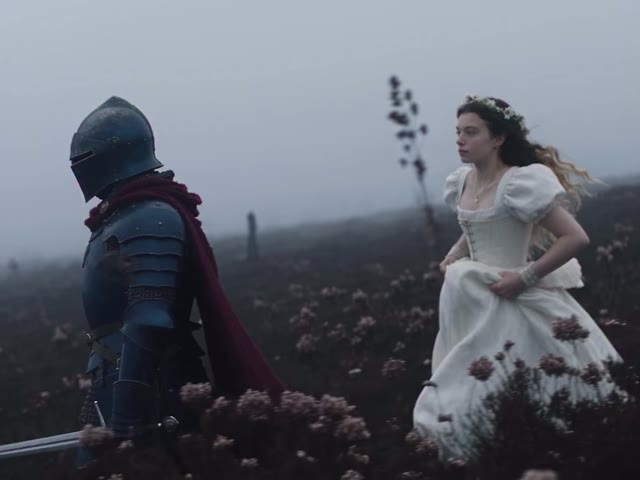
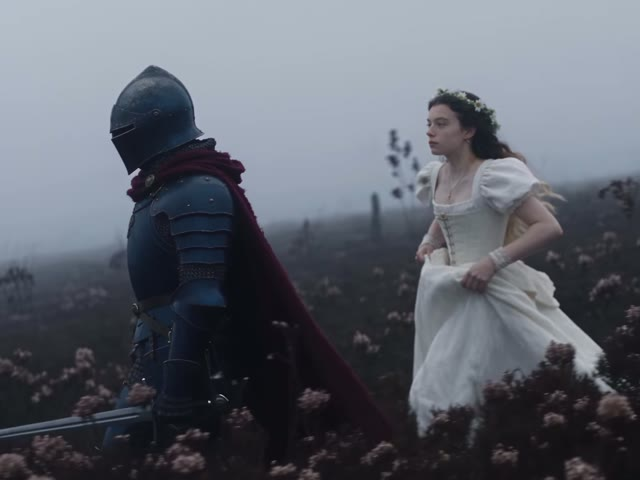
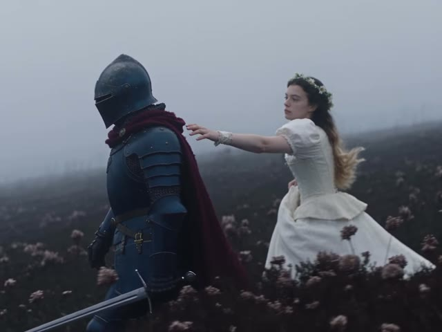
| 샷 크기 / 앵글 | 와이드~미디엄 풀샷, 눈높이 측면 |
|---|---|
| 렌즈 · 심도 | 약 50mm, f/2.8, 배경 안개 속 흐림 |
| 카메라 무빙 | 측면 트래킹(트럭) — 여자가 달리는 속도에 맞춰 옆으로 이동, 약한 핸드헬드 |
| 화면 구도 (위치) | 기사 = 화면 왼쪽 10~35% 전경(3/4 뒷모습, 왼쪽을 봄, 칼이 왼쪽 아래로), 여자 = 오른쪽 55~80% 에서 왼쪽으로 달려오며 3초경 팔을 뻗어 기사 어깨 쪽으로 |
| 인물 행동 · 표정 | 여자: 드레스 자락을 쥐고 달리다 오른팔을 쭉 뻗음, 머리카락 휘날림, 간절한 표정. 기사: 거의 움직이지 않고 서 있음 |
| 배경 · 소품 | 검붉게 시든 헤더 꽃밭, 안개 낀 언덕, 말라버린 식물 줄기 실루엣, 흐린 하늘 |
| 조명 · 색 | 흐린 황혼, 청회색·틸, 저채도, 부드러운 확산광 |
| 들어오는 전환 | 첫 샷 |
| 소리 (BGM/SFX/대사) | 음악 시작 — 약 65 BPM(0.92초 간격) 규칙적인 펄스, 3.65s 비트에 맞춰 다음 컷 |
| 편집 의도 | 누가 누구인지 안 알려주고 행동(달려가서 손 뻗기)만 보여줌 = 궁금증 훅 |
kling-v3 — 달리기·드레스·망토 물리 + 인물 2명 일관성seedance-2-5 — 트래킹 카메라 무빙veo-3-1 — 안개·필름 질감nano-banana-pro — 어른↔아이 같은 얼굴 계열 유지midjourney-v8-2 — 황금빛·안개 무드flux-kontext-max — 매치컷용 손 위치 고정 편집Cold misty dusk on a dark moor covered in wilted burgundy heather flowers, blue-grey desaturated palette with teal shadows, soft overcast light, shallow depth of field, anamorphic cinematic film look, 4:3 frame. Side view at eye level. LEFT foreground (10-35% of frame width): a knight in dark blue steel plate armor with a closed great helm, a burgundy knitted scarf and long burgundy cape, holding a sword low, seen from a three-quarter back angle facing left, standing still. RIGHT (55-80%): a young woman with long dark wavy hair and a small flower crown, in a white puff-sleeve peasant dress with lace cuffs, running toward him from the right, gripping her skirt, hair flying, desperate hopeful expression.
Cold misty dusk on a dark moor covered in wilted burgundy heather flowers, blue-grey desaturated palette with teal shadows, soft overcast light, shallow depth of field, anamorphic cinematic film look, 4:3 frame. Side view at eye level. LEFT foreground: a photorealistic anthropomorphic Syrian hamster man with golden-orange and cream fur, round glossy black eyes, small pink nose, soft whiskers, expressive human-like facial acting, upright human-like posture and hands with tiny pink fingers wearing dark blue steel plate armor with an open-face helm showing his hamster face, a burgundy knitted scarf and long burgundy cape, seen from a three-quarter back angle facing left, standing still. RIGHT: a photorealistic anthropomorphic dwarf hamster woman with fluffy pearl-white and silver-grey fur, large dark glossy eyes with long lashes, tiny pink nose, expressive human-like facial acting, upright human-like posture and delicate hands with a small flower crown, wearing a white puff-sleeve peasant dress with lace cuffs, running toward him, gripping her skirt, fur and hair ruffled by the wind, desperate hopeful expression. every prop, chair, table, car and building is scaled to hamster size so the world feels natural, real fur strand detail, cinematic live-action look, not cartoon, not 3D render, not plush toy.
Lateral tracking shot moving left with her. She runs through the heather toward the knight, then stretches her right arm out and reaches for his shoulder at the very end. The knight stands still. Cape and dress flow naturally in the wind, light mist drifts. Slight handheld feel.
no modern objects, no text, no extra people, no warped armor, no extra fingers, no face distortion, no cartoon look, no cut inside the clip
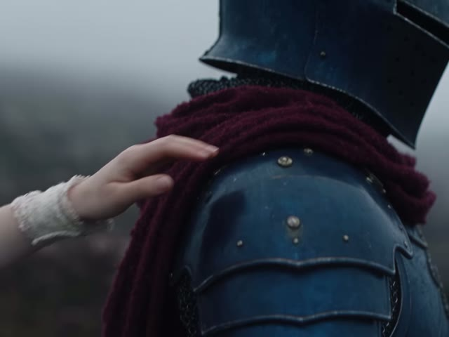
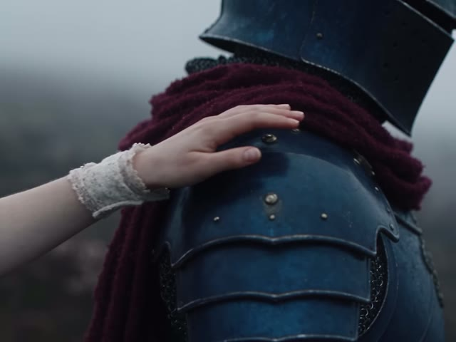
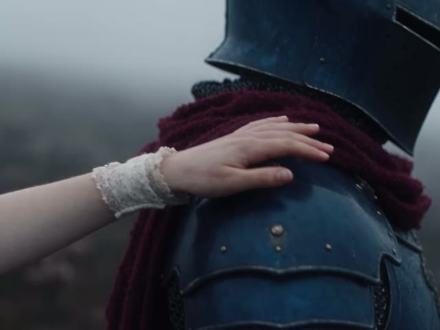
| 샷 크기 / 앵글 | 익스트림 클로즈업 인서트 |
|---|---|
| 렌즈 · 심도 | 85~100mm 매크로 느낌, f/2, 배경 크게 흐림 |
| 카메라 무빙 | 거의 고정, 손이 들어와 멈추는 순간 아주 미세한 푸시 |
| 화면 구도 (위치) | 손 = 화면 왼쪽 가장자리에서 들어와 가운데(x≈40%, y≈40%)에 안착. 갑옷 폴드런 = 화면 가운데~오른쪽 아래 60% 차지, 헬멧 아랫부분이 위쪽에 걸침, 버건디 니트 스카프가 왼쪽 |
| 인물 행동 · 표정 | 레이스 소매의 가는 손이 떨리듯 천천히 어깨에 닿아 살짝 쥠 |
| 배경 · 소품 | 흐린 안개 배경 |
| 조명 · 색 | 차가운 확산광, 금속 하이라이트 |
| 들어오는 전환 | 하드컷 (3.67s, 비트 위) |
| 소리 (BGM/SFX/대사) | 비트 펄스 지속 |
| 편집 의도 | 다음 매치컷을 위한 ‘손의 위치’를 관객 눈에 각인 — 0.8초로 짧게 |
kling-v3 — 첫/끝 프레임 지정으로 손 착지 위치 정확히seedance-2-5 — 대안minimax-h3 — 저렴한 반복nano-banana-pro — 어른↔아이 같은 얼굴 계열 유지midjourney-v8-2 — 황금빛·안개 무드flux-kontext-max — 매치컷용 손 위치 고정 편집Cold misty dusk on a dark moor covered in wilted burgundy heather flowers, blue-grey desaturated palette with teal shadows, soft overcast light, shallow depth of field, anamorphic cinematic film look, 4:3 frame. Extreme close-up insert: a slender female hand with a white lace cuff enters from the left and rests on the dark blue steel pauldron of a knight's shoulder, burgundy knitted scarf beside it, the lower edge of a steel helm at the top of frame. Hand centered at 40% width, 40% height.
Cold misty dusk on a dark moor covered in wilted burgundy heather flowers, blue-grey desaturated palette with teal shadows, soft overcast light, shallow depth of field, anamorphic cinematic film look, 4:3 frame. Extreme close-up insert: a tiny furry pearl-white hamster hand with a white lace cuff enters from the left and rests on the dark blue steel pauldron of an armored shoulder, burgundy knitted scarf beside it. Hand centered at 40% width, 40% height. every prop, chair, table, car and building is scaled to hamster size so the world feels natural, real fur strand detail, cinematic live-action look, not cartoon, not 3D render, not plush toy.
The hand slowly lands on the armored shoulder, fingers trembling slightly, then gently grips. Almost static camera with a tiny push-in.
no modern objects, no text, no extra people, no warped armor, no extra fingers, no face distortion, no cartoon look, no cut inside the clip
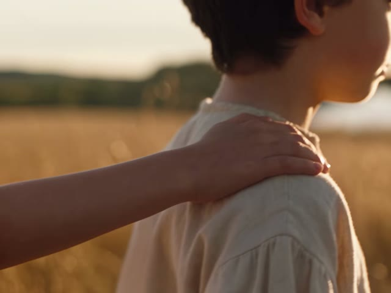
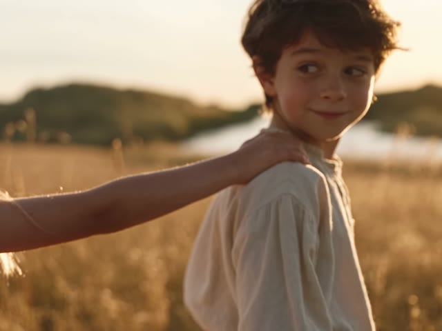
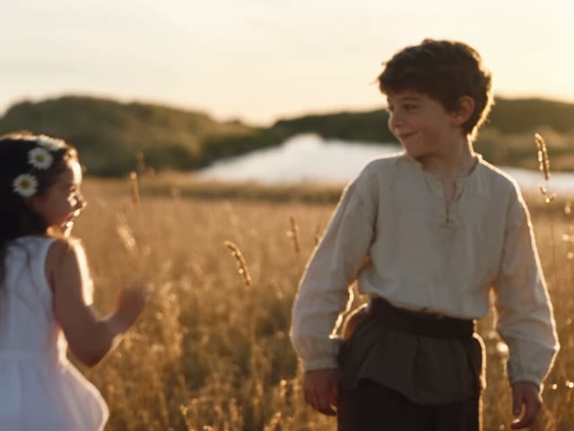
| 샷 크기 / 앵글 | 숄더 CU → (풀백) 미디엄 투샷 |
|---|---|
| 렌즈 · 심도 | 50~85mm, f/2, 역광 보케 |
| 카메라 무빙 | 처음 1초 고정(매치컷 위치 유지) → 천천히 달리 아웃(뒤로 빠짐)하며 두 아이가 모두 들어옴 |
| 화면 구도 (위치) | 시작 프레임: 아이 손 = x≈40%, y≈40% (S2 손과 같은 자리!), 소년 어깨가 화면 가운데~오른쪽. 끝: 소녀 왼쪽 20%, 소년 오른쪽 60% |
| 인물 행동 · 표정 | 소년이 어깨의 손을 느끼고 천천히 돌아보며 장난스럽게 웃음, 소녀는 손을 떼고 킥킥 웃으며 달아날 자세 |
| 배경 · 소품 | 끝없는 황금 밀밭, 뒤로 호수와 초록 언덕 |
| 조명 · 색 | 석양 역광, 머리카락 림라이트, 헤이즈, 호박색 |
| 들어오는 전환 | 매치컷 (4.47s) — 같은 손 위치·같은 화면 크기로 시간만 점프 |
| 소리 (BGM/SFX/대사) | 비트 펄스 지속(4.61s 비트) |
| 편집 의도 | 기사 = 그 소년이라는 사실을 말없이 알려주는 영화적 반전 |
kling-v3 — 첫 프레임(편집한 매치 이미지) 고정 + 자연스러운 풀백seedance-2-5 — 아이 2명 동작veo-3-1 — 역광 질감flux-kontext-max — S2 마지막 프레임을 넣고 '손 위치는 그대로, 갑옷→리넨 셔츠, 안개→밀밭' 편집 = 매치컷 첫 프레임nano-banana-pro — 대안 편집midjourney-v8-2 — 무드 참고Golden hour in a vast field of tall golden wheat, strong warm backlight from a low sun, glowing rim light and haze, a calm lake and soft green hills in the background, amber and honey palette, bloom, shallow depth of field, cinematic film look, 4:3 frame. Close-up matching the previous insert exactly: a small child's hand enters from the left and rests on the shoulder of a 9-year-old boy with messy brown hair in a loose cream linen shirt and dark trousers (hand at 40% width, 40% height, same size and angle as the armored-shoulder insert), boy seen from behind three-quarter, glowing rim light.
Golden hour in a vast field of tall golden wheat, strong warm backlight from a low sun, glowing rim light and haze, a calm lake and soft green hills in the background, amber and honey palette, bloom, shallow depth of field, cinematic film look, 4:3 frame. Close-up matching the previous insert exactly: a tiny fluffy child hamster hand enters from the left and rests on the shoulder of a young child version of the male hamster (smaller, rounder, fluffier golden-orange fur) in a loose cream linen shirt (hand at 40% width, 40% height), seen from behind three-quarter, glowing rim light. every prop, chair, table, car and building is scaled to hamster size so the world feels natural, real fur strand detail, cinematic live-action look, not cartoon, not 3D render, not plush toy.
Hold the first second exactly still, then the camera slowly dollies back. The boy feels the hand, turns his head and smiles mischievously over his shoulder; the girl pulls her hand back, giggles and gets ready to run. Warm backlit wheat sways gently.
no modern objects, no text, no extra people, no warped armor, no extra fingers, no face distortion, no cartoon look, no cut inside the clip, keep the hand position identical in the first frame
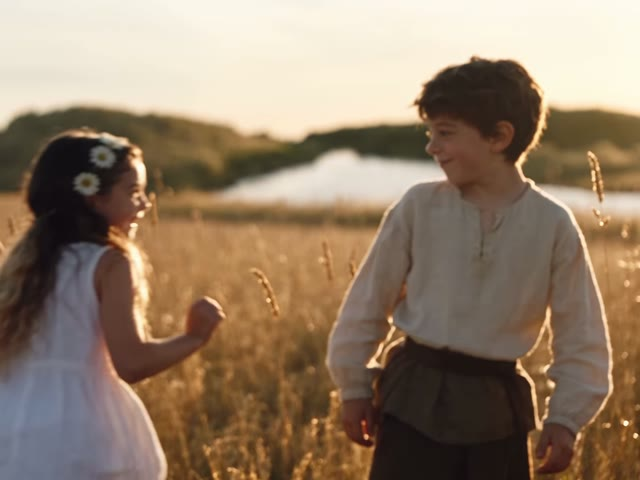
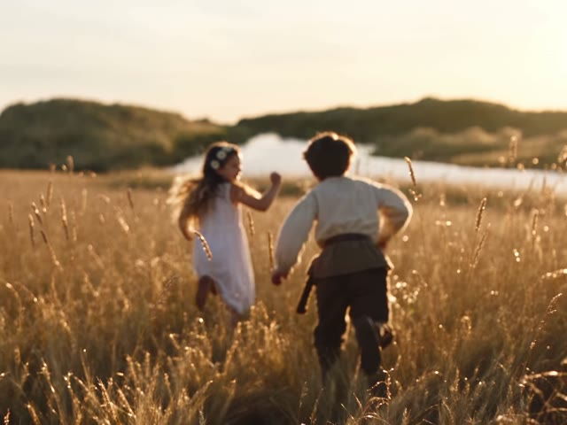
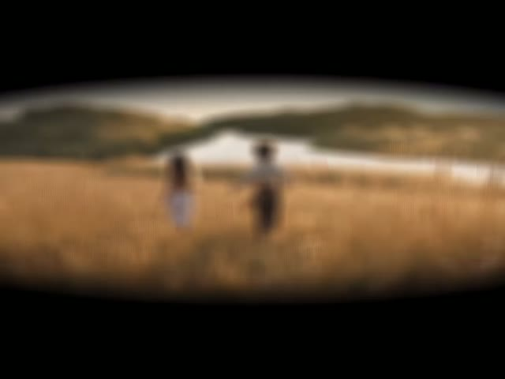
| 샷 크기 / 앵글 | 와이드 (뒤에서) |
|---|---|
| 렌즈 · 심도 | 35~50mm, 중간 심도 |
| 카메라 무빙 | 고정에 가까운 약한 팔로우, 아이들이 스스로 멀어짐. 12.2s부터 눈꺼풀 마스크가 닫힘 |
| 화면 구도 (위치) | 시작: 소녀 왼쪽 30%, 소년 오른쪽 55%, 크게. 끝: 둘이 화면 가운데 위쪽(y≈40%)의 작은 점, 호수 수평선이 화면 위 1/3 |
| 인물 행동 · 표정 | 소녀가 먼저 뛰고 소년이 쫓아감, 둘 다 웃으며 멀어짐 |
| 배경 · 소품 | 밀밭, 호수, 언덕 |
| 조명 · 색 | 석양 역광, 헤이즈 |
| 들어오는 전환 | 연속 동작 컷 (8.6s, 필요 시 두 클립을 동작 연결로 이음) |
| 소리 (BGM/SFX/대사) | 비트 펄스, 12.2s부터 whoosh 시작 |
| 편집 의도 | ‘멀어지는 거리’ = 흘러간 시간. 작아진 뒤 눈꺼풀이 닫혀 기억이 끝남 |
seedance-2-5 — 아이 둘 달리기 + 멀어지는 원근minimax-h3 — 밀·머리카락 물리kling-v3 — 대안nano-banana-pro — 어른↔아이 같은 얼굴 계열 유지midjourney-v8-2 — 황금빛·안개 무드flux-kontext-max — 매치컷용 손 위치 고정 편집Golden hour in a vast field of tall golden wheat, strong warm backlight from a low sun, glowing rim light and haze, a calm lake and soft green hills in the background, amber and honey palette, bloom, shallow depth of field, cinematic film look, 4:3 frame. Wide shot from behind: a 7-year-old girl with long light-brown hair, a white daisy tucked behind her ear, in a simple white cotton dress runs ahead on the left and a 9-year-old boy with messy brown hair in a loose cream linen shirt and dark trousers chases her on the right, deep into the wheat field toward the lake and hills.
Golden hour in a vast field of tall golden wheat, strong warm backlight from a low sun, glowing rim light and haze, a calm lake and soft green hills in the background, amber and honey palette, bloom, shallow depth of field, cinematic film look, 4:3 frame. Wide shot from behind: a young child version of the female hamster (tiny, extra fluffy pearl-white fur) with a white daisy behind her ear, in a white cotton dress runs ahead on the left and a young child version of the male hamster (smaller, rounder, fluffier golden-orange fur) in a loose cream linen shirt chases her on the right, deep into the wheat field toward the lake. every prop, chair, table, car and building is scaled to hamster size so the world feels natural, real fur strand detail, cinematic live-action look, not cartoon, not 3D render, not plush toy.
The two children run away from camera through the tall wheat, laughing, getting smaller and smaller until they are tiny figures near the lake. Camera almost static with a gentle follow.
no modern objects, no text, no extra people, no warped armor, no extra fingers, no face distortion, no cartoon look, no cut inside the clip
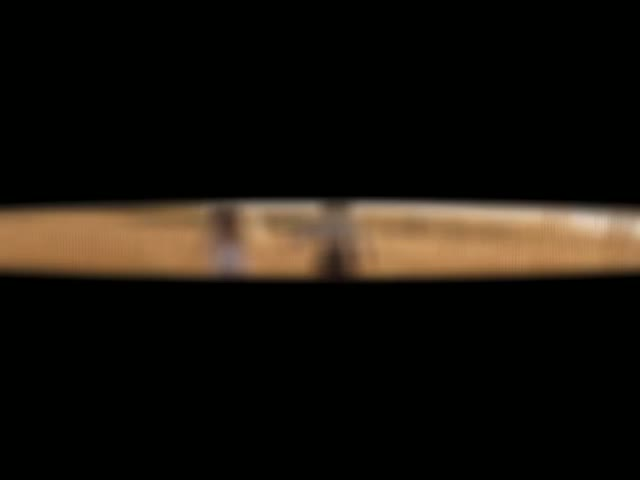
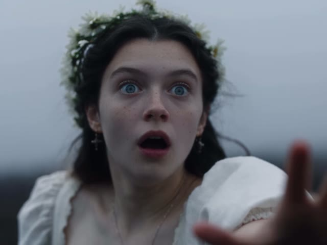
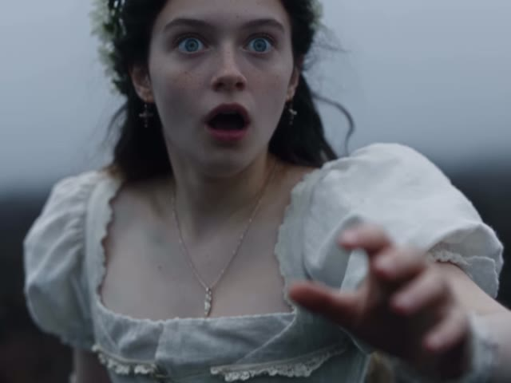
| 샷 크기 / 앵글 | 클로즈업 (POV — 기사의 시점) |
|---|---|
| 렌즈 · 심도 | 35~50mm 가까이, f/2, 손 전경 흐림 |
| 카메라 무빙 | 블링크로 열리며 초점이 흐림→선명, 이후 아주 느린 푸시인 |
| 화면 구도 (위치) | 얼굴 = 가운데(x≈45%, y≈30%), 눈이 상단 1/3선. 오른손이 화면 오른쪽 아래 전경에서 카메라 쪽으로 뻗음(흐림). 흰 퍼프 소매가 아래쪽 |
| 인물 행동 · 표정 | 눈을 크게 뜨고 입을 벌린 채 숨을 멈춘 경악·깨달음, 거의 움직이지 않음 |
| 배경 · 소품 | 흐린 하늘과 어두운 들판 (안개) |
| 조명 · 색 | 차가운 청회색, 얼굴에 부드러운 정면광 |
| 들어오는 전환 | 블링크 열림 (12.55~12.90s) — 흐림에서 초점 인 |
| 소리 (BGM/SFX/대사) | 로우패스로 먹먹해진 음악(고음 사라짐), 끝까지 유지 |
| 편집 의도 | 결말 대신 감정의 정점에서 끊어 여운·댓글·반복 재생 유도 |
kling-v3 — 경악 표정 유지 + 눈 떨림 미세 연기veo-3-1 — 숨소리까지seedance-2-5 — 대안nano-banana-pro — 어른↔아이 같은 얼굴 계열 유지midjourney-v8-2 — 황금빛·안개 무드flux-kontext-max — 매치컷용 손 위치 고정 편집Cold misty dusk on a dark moor covered in wilted burgundy heather flowers, blue-grey desaturated palette with teal shadows, soft overcast light, shallow depth of field, anamorphic cinematic film look, 4:3 frame. Close-up POV from the knight's perspective: a young woman with long dark wavy hair and a small flower crown, in a white puff-sleeve peasant dress with lace cuffs stares straight toward the camera, eyes wide, mouth open in shocked recognition, her right hand reaching toward the lens in the lower-right foreground, blurred. Face centered at 45% width, eyes on the upper third.
Cold misty dusk on a dark moor covered in wilted burgundy heather flowers, blue-grey desaturated palette with teal shadows, soft overcast light, shallow depth of field, anamorphic cinematic film look, 4:3 frame. Close-up POV from the knight's perspective: a photorealistic anthropomorphic dwarf hamster woman with fluffy pearl-white and silver-grey fur, large dark glossy eyes with long lashes, tiny pink nose, expressive human-like facial acting, upright human-like posture and delicate hands with a small flower crown, wearing a white puff-sleeve peasant dress with lace cuffs stares toward the camera, huge glossy eyes wide, mouth open in shocked recognition, one tiny hand reaching toward the lens in the lower-right foreground, blurred. every prop, chair, table, car and building is scaled to hamster size so the world feels natural, real fur strand detail, cinematic live-action look, not cartoon, not 3D render, not plush toy.
She is frozen in shocked recognition, breath caught, eyes trembling slightly and filling with emotion, hand reaching toward camera. Very slow push-in. Starts slightly out of focus and racks into sharp focus in the first half second.
no modern objects, no text, no extra people, no warped armor, no extra fingers, no face distortion, no cartoon look, no cut inside the clip, no speaking, no smiling
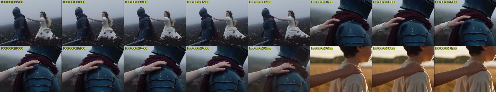
여자가 팔을 뻗는 동작의 끝(3.6s)에서 바로 손 초근접으로 컷. 동작이 두 샷에 걸쳐 이어져 컷이 안 느껴진다. 이어서 4.47s 매치컷: 갑옷 어깨 위 손 → 소년 어깨 위 아이 손. 화면 속 손의 위치(x≈40%, y≈40%)와 크기가 같아 ‘시간만 바뀐’ 것처럼 보인다.
하드컷. 매치 정확도 확인: ffmpeg -ss 4.43 -i S2.mp4 -frames:v 1 a.png & ffmpeg -ss 0 -i S3.mp4 -frames:v 1 b.png → ffmpeg -i a.png -i b.png -filter_complex blend=all_mode=difference diff.png (손이 겹치면 성공)
S2 끝과 S3 시작을 같은 트랙에 하드컷. 매치 확인용으로 Studio에서 S3를 opacity 0.5로 잠시 겹쳐 손 위치를 비교한 뒤 원복.
타원형 비네트가 위아래에서 닫혀(12.2→12.6s) 가로 한 줄 → 완전 검정 → 다시 타원으로 열리며(12.7→12.9s) 흐릿한 현재 장면이 나타나고 초점이 맞춰짐. 동시에 오디오 고음이 잘려 먹먹해진다(주파수 그림에서 12.7초 이후 위쪽이 사라짐). 눈을 감았다 뜨는 1인칭 체감 = 기억에서 현실로.
# 닫힘 (S4 마지막 0.35초) — 타원 높이 1→0 [s4tail]format=rgba,geq=r='r(X,Y)':g='g(X,Y)':b='b(X,Y)':a='255*lte(pow((X-W/2)/(W*0.62),2)+pow((Y-H/2)/(H*0.62*max(0.002,1-T/0.35)),2),1)',gblur=sigma=4[cl]; color=black:s=1440x1080:r=30:d=0.35[bk1];[bk1][cl]overlay=format=auto,format=yuv420p[close]; # 열림 (S5 처음 0.35초) — 타원 높이 0→1 + 흐림 [s5head]format=rgba,geq=r='r(X,Y)':g='g(X,Y)':b='b(X,Y)':a='255*lte(pow((X-W/2)/(W*0.62),2)+pow((Y-H/2)/(H*0.62*max(0.002,T/0.35)),2),1)',gblur=sigma=10[op]; color=black:s=1440x1080:r=30:d=0.35[bk2];[bk2][op]overlay=format=auto,format=yuv420p[open]; # 빠른 대안: [a][b]xfade=transition=circleclose:duration=0.35 → 원본과는 다름(원형), 타원 geq 권장
S4 래퍼에 clip-path: ellipse(62% 62% at 50% 50%) → ellipse(62% 0% at 50% 50%) 를 12.20~12.55초 GSAP tween(ease power2.in). S5 래퍼는 12.55~12.90초 ellipse(62% 0%) → ellipse(62% 62%) + filter blur(8px)→blur(0) (ease power2.out). 오디오: bgm의 data-automation으로 12.55초 이후 볼륨 0.8, 그리고 LPF가 필요하면 bgm을 미리 FFmpeg로 두 조각(원음/로우패스) 만들어 12.55초에서 교체.
전 구간 한 곡의 감성 시네마틱 음악. 0.92초마다 규칙적인 타격(시계·심장박동 같은 펄스, 약 65 BPM)이 있고 컷(3.65s, 4.61s)이 그 박자에 떨어진다. 12.7초 블링크 순간부터 고음이 싹 사라짐 = 로우패스 필터로 ‘먹먹한 현재’ 연출. 대사 없음.
| 시간 | 소리 | 제작 방법 |
|---|---|---|
| 0.0–12.55s | BGM: 피아노+현악 감성 시네마틱, 65 BPM 펄스(틱 or 심장박동 킥) | text2music 생성, 컷을 펄스에 맞춤 |
| 12.20–12.60s | 블링크 whoosh (리버스 스웰) | sfx_whoosh.wav, 12.2s 시작 |
| 12.55s~끝 | 같은 음악에 로우패스 700Hz (먹먹) | lowpass=f=700:enable='gte(t,12.55)' |
| 12.9s~끝 | (선택) 낮은 이명/톤 -28dB | sfx_tone.wav, 긴장 유지 |
Emotional cinematic score, 65 BPM, steady soft ticking pulse like a heartbeat on every beat, melancholic solo piano motif over warm low strings, gradual swell, nostalgic and bittersweet, medieval romance mood, instrumental, 20 seconds, big emotional peak around 0:12
| 요소 | 설정 |
|---|---|
| 현재 (S1·S2·S5) | 청회색, 틸 그림자, 채도 -30%, 대비 낮게, 안개 |
| 과거 (S3·S4) | 호박색·꿀색, 역광 림라이트, 하이라이트 bloom, 채도 +10% |
| 공통 | 4:3 화면비, 은은한 비네팅, 약한 그레인 |
| 대비 원칙 | 색온도 차이(약 3500K vs 7000K)만으로 시간대 구분이 되게 |
| 인 메디아스 레스 (In medias res) | 사건 한가운데서 시작하는 서사 |
| 매치컷 (Match cut / Graphic match) | 두 샷의 형태·동작·위치를 맞춰 이어붙이는 컷 — 여기선 ‘어깨 위의 손’ |
| 동작 컷 (Cut on action) | 움직임 도중에 컷해서 이음새를 숨김 |
| 인서트 (Insert) | 중요 디테일(손)을 초근접으로 끼워 넣는 샷 |
| 블링크 전환 (Blink transition / Iris) | 눈꺼풀처럼 닫혔다 열리는 전환 — 1인칭 기억 연출 |
| 로우패스 사운드 (Low-pass / Muffle) | 고음을 잘라 먹먹하게 → 충격·깨어남·기억 연출 |
| POV 샷 | 인물의 시점으로 보는 샷 — 마지막 얼굴은 기사의 눈 |
# === P3 기사 매치컷 + 블링크 (30fps, 1440x1080 4:3) === # 준비물: s01~s05.mp4, bgm.wav(65BPM), sfx_whoosh.wav N="scale=1440:1080:force_original_aspect_ratio=increase,crop=1440:1080,fps=30,setsar=1" COLD="eq=saturation=0.7:contrast=0.95,colorbalance=bs=0.08:bm=0.04:rh=-0.03,vignette=PI/5" WARM="eq=saturation=1.1,colorbalance=rs=0.06:gs=0.03:bs=-0.08:rh=0.05,vignette=PI/5" CLOSE='255*lte(pow((X-W/2)/(W*0.62),2)+pow((Y-H/2)/(H*0.62*max(0.002,1-T/0.35)),2),1)' OPEN='255*lte(pow((X-W/2)/(W*0.62),2)+pow((Y-H/2)/(H*0.62*max(0.002,T/0.35)),2),1)' ffmpeg -y -i s01.mp4 -i s02.mp4 -i s03.mp4 -i s04.mp4 -i s05.mp4 -i bgm.wav -i sfx_whoosh.wav -filter_complex " [0:v]$N,trim=0:3.667,setpts=PTS-STARTPTS,$COLD[v1]; [1:v]$N,trim=0:0.8,setpts=PTS-STARTPTS,$COLD[v2]; [2:v]$N,trim=0:4.133,setpts=PTS-STARTPTS,$WARM[v3]; [3:v]$N,trim=0:3.95,setpts=PTS-STARTPTS,$WARM,split[s4a][s4b]; [s4a]trim=0:3.6,setpts=PTS-STARTPTS[v4]; [s4b]trim=3.6:3.95,setpts=PTS-STARTPTS,format=rgba,geq=r='r(X,Y)':g='g(X,Y)':b='b(X,Y)':a='$CLOSE',gblur=sigma=4[cl]; color=black:s=1440x1080:r=30:d=0.35[bk1];[bk1][cl]overlay=format=auto,format=yuv420p[v4c]; [4:v]$N,trim=0:4.58,setpts=PTS-STARTPTS,$COLD,split[s5a][s5b]; [s5a]trim=0:0.35,setpts=PTS-STARTPTS,format=rgba,geq=r='r(X,Y)':g='g(X,Y)':b='b(X,Y)':a='$OPEN',gblur=sigma=10[op]; color=black:s=1440x1080:r=30:d=0.35[bk2];[bk2][op]overlay=format=auto,format=yuv420p[v5o]; [s5b]trim=0.35:4.58,setpts=PTS-STARTPTS,format=yuv420p[v5]; [v1][v2][v3][v4][v4c][v5o][v5]concat=n=7:v=1:a=0,noise=alls=5:allf=t,format=yuv420p[v]; [5:a]atrim=0:17.13,lowpass=f=700:enable='gte(t,12.55)',afade=t=out:st=16.5:d=0.63[m]; [6:a]adelay=12200|12200,volume=0.7[w]; [m][w]amix=inputs=2:normalize=0:duration=first,loudnorm=I=-14:TP=-1:LRA=11[a]" \ -map "[v]" -map "[a]" -c:v libx264 -preset slow -crf 17 -pix_fmt yuv420p -r 30 -c:a aac -b:a 192k -movflags +faststart P3_knight_final.mp4 # 샷 길이 합계: 3.667+0.8+4.133+3.6+0.35+0.35+4.23 = 17.13s # 9:16 릴스 버전: -vf "crop=ih*9/16:ih,scale=1080:1920" 는 4:3에서 좌우가 많이 잘리니 샷별로 x 위치 조정 권장
/hyperframes 1440x1080(4:3), 30fps, 17.13초 컴포지션 'p3-knight'. 트랙0 하드컷: s01 0(3.667) · s02 3.667(0.8) · s03 4.467(4.133) · s04 8.6(3.95) · s05 12.55(4.58). - s01·s02·s05 래퍼: filter saturate(.7) + 청회색 오버레이 rgba(60,90,120,.15) soft-light. s03·s04: saturate(1.1) + 호박색 오버레이 rgba(255,170,80,.12). - 블링크: s04 래퍼 clip-path ellipse(62% 62%)→ellipse(62% 0%) 12.20~12.55초 power2.in, 루트 배경 검정. s05 래퍼 ellipse(62% 0%)→(62% 62%) + blur(8px→0) 12.55~12.90초 power2.out. - 오디오: bgm_clean.mp3 0~12.55, bgm_lpf.mp3(FFmpeg lowpass=700으로 미리 만든 같은 곡, data-media-start=12.55) 12.55~17.13, 0.05초 크로스페이드. sfx_whoosh.mp3 12.2초. - 매치컷 확인: snapshot 4.43s와 4.50s를 뽑아 손 위치 비교 보고. - check 0 findings → snapshot 1.8/4.0/6.5/10.5/12.4/12.7/15s → 렌더는 승인 후.
<div id="root" data-composition-id="p3-knight" data-width="1440" data-height="1080" data-duration="17.13" style="background:#000">
<div id="w1" class="clip cold" data-start="0" data-duration="3.667" data-track-index="0"><video id="c1" src="s01.mp4" muted></video></div>
<div id="w2" class="clip cold" data-start="3.667" data-duration="0.8" data-track-index="0"><video id="c2" src="s02.mp4" muted></video></div>
<div id="w3" class="clip warm" data-start="4.467" data-duration="4.133" data-track-index="0"><video id="c3" src="s03.mp4" muted></video></div>
<div id="w4" class="clip warm" data-start="8.6" data-duration="3.95" data-track-index="0"><div id="lid4"><video id="c4" src="s04.mp4" muted></video></div></div>
<div id="w5" class="clip cold" data-start="12.55" data-duration="4.58" data-track-index="0"><div id="lid5"><video id="c5" src="s05.mp4" muted></video></div></div>
<audio id="bgm-clean" src="bgm_clean.mp3" data-start="0" data-duration="12.6" data-volume="1"></audio>
<audio id="bgm-lpf" src="bgm_lpf.mp3" data-start="12.55" data-media-start="12.55" data-duration="4.58" data-volume="0.9"></audio>
<audio id="whoosh" src="sfx_whoosh.mp3" data-start="12.2" data-duration="0.8" data-volume="0.7"></audio>
</div>
<!-- GSAP: tl.fromTo('#lid4',{clipPath:'ellipse(62% 62% at 50% 50%)'},{clipPath:'ellipse(62% 0% at 50% 50%)',duration:0.35,ease:'power2.in'},12.2);
tl.fromTo('#lid5',{clipPath:'ellipse(62% 0% at 50% 50%)',filter:'blur(8px)'},{clipPath:'ellipse(62% 62% at 50% 50%)',filter:'blur(0px)',duration:0.35,ease:'power2.out'},12.55); -->[작업] 인스타 릴스 'He promised her this when they were kids…'를 햄스터 커플 버전으로 1:1 재현한다. [수정 가능 범위] 새 작업 폴더 안 파일 생성만. 🔴 업로드·결제·삭제는 승인 전 금지. 1) 캐릭터 4종(nano-banana-pro): 어른 남(파란 판금갑옷+버건디 망토, 얼굴 보이는 투구) / 어른 여(흰 퍼프소매 드레스+화관) / 아이 남(리넨 셔츠) / 아이 여(흰 원피스+데이지). 아이는 어른과 같은 털 색·무늬. 2) 키프레임: S1, S2, S4, S5는 ②동물 이미지 프롬프트로 생성. S3 첫 프레임은 반드시 S2 이미지를 flux-kontext-max(또는 nano-banana-pro)에 넣고 '손 위치·크기·각도 그대로, 갑옷→리넨 셔츠 어깨, 안개→황금 밀밭 역광'으로 편집해서 만든다(매치컷). 3) 영상: S1 kling-v3, S2 kling-v3(끝 프레임 지정), S3 kling-v3(첫 프레임=편집 이미지), S4 seedance-2-5, S5 kling-v3. 각 3회. 4) 음악: 65 BPM 펄스 감성 BGM 20초 + whoosh 효과음. 5) 편집: 9번 FFmpeg 스크립트 실행 → P3_knight_final.mp4(17.13초). 매치컷 diff 이미지와 블링크 12.2~12.9초 10fps 스트립을 증거로 제출. 6) 캡션 초안 3개: 원본처럼 '약속'을 암시하는 한 줄 + 짧은 이야기 요약.
kling-v3 / kling-v3-omni — 얼굴 미세 연기(눈물·굳는 미소), 손 연기, 첫/끝 프레임 지정(매치컷). omni는 캐릭터 참조 이미지로 얼굴 고정seedance-2-5 / seedance-2-0 — 다인물 동작(춤·달리기), 카메라 무빙, 멀티샷 일관성. 가성비 좋은 주력minimax-h3 / h3-max (Hailuo) — 물리·파티클(샴페인 스플래시, 지폐 비, 머리카락·드레스 휘날림), 자연스러운 미세 움직임hailuo-2-3 — 짧은 미세 동작 원테이크, 저렴한 대량 테스트veo-3-1 — 대사 립싱크 + 앰비언스 사운드 동시 생성, 필름 질감. 대사 있는 샷 1순위gemini-omni-1-1-flash (Google Omni) — 대사/소리 포함 빠른 초안, 참조 이미지 기반 일관성 테스트nano-banana-pro — 캐릭터 시트 → 샷별 키프레임 편집(얼굴·의상 고정), 사람→동물 교체 편집 1순위midjourney-v8-2 — 필름 룩·조명·분위기 최상. 첫 무드 키프레임용seedream-5-0-pro — 고해상도 실사 키프레임, 참조 여러 장 합성flux-kontext-max — 기존 프레임 부분 수정(손 위치 유지한 채 배경만 교체 = 매치컷 제작)gpt-image-2-5 — 반지·시계·지폐 같은 소품 디테일 정확도기간 대비 4위 · 하루 9,491 좋아요 · 댓글률 1위 (1천 좋아요당 6.3개)@tetiana.noir (Tetiana Kotvytska | Digital Artist & AI Creator) · 업로드 2026-09-06
캡션: The Proposal. Part 1 / DISCLAIMER: AI GENERATED / SYNTHETIC MEDIA / #higgsfield
| 좋아요 | 170,836 |
|---|---|
| 댓글 | 1,079 (1천 좋아요당 6.32개 = 최고) |
| 업로드 후 | 18일 |
| 하루 평균 좋아요 | 9,491 |
| 길이 | 19.73초 · 9샷 + 블랙 |
| 해상도 · fps | 1440×2560 (9:16 세로) · 30fps |
| 대사 (실측) | Seriously? / Will you marry me? / You left this at my place last night. / Last night. / Wait! |
| 이 영상은 | 프러포즈 반지 → 승낙의 미소 → 다른 여자가 ‘어젯밤 우리 집에 두고 간 시계’를 내려놓음 → 눈물 → 샴페인 세례 → 암전 |
|---|---|
| 핵심 장치 | ① 소품(반지·시계)으로 이야기 전달 ② 화면보다 소리가 먼저 오는 J컷 ③ 폭로 직후 3초 정적 → 음악 드롭 ④ 암전 클리프행어 |
| 따라 만들 난이도 | 어려움 — 3인 캐릭터 + 대사 립싱크 + 액체 물리 |
| 예상 제작 시간 | 약 3~4시간 |
| 사용자 흐름 | ① 3인 캐릭터 시트 → ② 10샷 키프레임 → ③ 대사 샷은 veo-3-1, 감정 샷 kling-v3, 스플래시 minimax-h3-max → ④ FFmpeg로 J컷·정적·드롭 편집 → ⑤ Part 1 캡션 |
| 구간 | 역할 | 내용 |
|---|---|---|
| 0.00–3.10s | 훅 | 샴페인 → 잔 속 반지. ‘Seriously?’ |
| 3.10–5.67s | 행복 최고점 | ‘Will you marry me?’ → 환한 미소 (4.76s부터 낯선 목소리 선행) |
| 5.67–7.83s | 반전 | 버건디 드레스 여자가 시계를 내려놓으며 ‘You left this at my place last night.’ |
| 7.83–11.2s | 정적 | 남자 고개 떨굼 → 그녀 미소가 굳기 시작, 소리 거의 없음 |
| 11.2–14.93s | 감정 폭발 | 음악 드롭, 눈물, ‘Last night.’ · ‘Wait!’ |
| 14.93–18.50s | 응징 | 샴페인 세례 → 일어나 떠남 |
| 18.50–19.73s | 클리프행어 | 젖은 남자 + 시계 → 암전 (Part 2 유도) |
| 샷 크기 / 앵글 | 클로즈업(얼굴+잔), 살짝 높은 눈높이 |
|---|---|
| 렌즈 · 심도 | 50mm, f/2 |
| 카메라 무빙 | 핸드헬드 미세 흔들림 |
| 화면 구도 (위치) | 여자 얼굴 = 가운데-왼쪽(x≈40%, y≈30%), 잔 = 왼쪽 아래 1/3, 남자 얼굴 반쪽이 오른쪽 가장자리에 걸침(x≈85%) |
| 인물 행동 · 표정 | 눈 감고 샴페인 한 모금 → 잔을 내리며 눈을 뜨고 잔 속을 내려다봄 |
| 배경 · 소품 | 어두운 레스토랑 보케 |
| 조명 · 색 | 따뜻한 텅스텐, 얼굴 하이라이트 |
| 들어오는 전환 | 첫 샷 (0프레임부터 얼굴) |
| 소리 (BGM/SFX/대사) | 레스토랑 웅성거림 -30dB |
| 편집 의도 | 행복한 연인 = 곧 무너질 것의 설정 |
kling-v3 — 미소→굳음→눈물 미세 감정 연기 최고veo-3-1 — 속삭임 대사 포함 시seedance-2-5 — 대안nano-banana-pro — 3인 캐릭터 고정 + 햄스터 변환midjourney-v8-2 — 70~90년대 플래시 필름 무드gpt-image-2-5 — 반지·시계 소품 정확도vertical 9:16, 1970s-90s flash film photograph look, warm tungsten restaurant light, rich shadows, visible film grain, slight softness, candid paparazzi-style intimacy, upscale old Parisian brasserie with dark wood panels, brass lamps and chandelier bokeh. Close-up: a young woman with long straight honey-blonde hair, glowing skin, pink lips, a pearl choker, a black plunging blazer dress sips champagne from a cut-crystal coupe with her eyes closed; the face of a handsome man with dark curly hair and stubble, wearing a navy knit sweater and a gold wristwatch is half visible at the right edge, nuzzling close to her.
vertical 9:16, 1970s-90s flash film photograph look, warm tungsten restaurant light, rich shadows, visible film grain, slight softness, candid paparazzi-style intimacy, upscale old Parisian brasserie with dark wood panels, brass lamps and chandelier bokeh. Close-up: a photorealistic anthropomorphic dwarf hamster woman with fluffy pearl-white and silver-grey fur, large dark glossy eyes with long lashes, tiny pink nose, expressive human-like facial acting, upright human-like posture and delicate hands with honey-blonde tinted fur, a pearl choker, a black plunging blazer dress sips champagne from a tiny cut-crystal coupe with eyes closed; half of the face of a photorealistic anthropomorphic Syrian hamster man with golden-orange and cream fur, round glossy black eyes, small pink nose, soft whiskers, expressive human-like facial acting, upright human-like posture and hands with tiny pink fingers wearing a navy knit sweater and a tiny gold wristwatch is visible at the right edge, nuzzling close. every prop, chair, table, car and building is scaled to hamster size so the world feels natural, real fur strand detail, cinematic live-action look, not cartoon, not 3D render, not plush toy.
She takes a sip with her eyes closed, then lowers the glass slightly, opens her eyes and looks down into it, curious.
no text, no subtitles, no extra hands, no warped glass, no deformed ring, no looking at the lens, no cut inside the clip, no cartoon look
| 샷 크기 / 앵글 | 익스트림 클로즈업 POV(잔 위에서 내려다봄) |
|---|---|
| 렌즈 · 심도 | 매크로 100mm, f/2.8 |
| 카메라 무빙 | 아주 느린 회전감 + 반짝임 |
| 화면 구도 (위치) | 반지 = 정중앙 약간 아래(y≈58%), 잔 테두리 크리스탈 컷이 화면 위쪽을 감싸 원형 프레임 |
| 인물 행동 · 표정 | 샴페인 속 바닥에 가라앉은 다이아 약혼반지, 기포가 올라감 |
| 배경 · 소품 | 크리스탈 잔 내부 굴절 |
| 조명 · 색 | 금빛 샴페인, 다이아 스파클 |
| 들어오는 전환 | 하드컷 (1.17s) |
| 소리 (BGM/SFX/대사) | 대사 ‘Seriously?’ (1.6s, 그녀 — 화면 밖 목소리) |
| 편집 의도 | 프러포즈 정보를 대사 대신 소품으로 먼저 전달 |
kling-v3 — 액체 굴절·기포·반짝임 안정seedance-2-5 — 대안minimax-h3 — 저렴한 반복nano-banana-pro — 3인 캐릭터 고정 + 햄스터 변환midjourney-v8-2 — 70~90년대 플래시 필름 무드gpt-image-2-5 — 반지·시계 소품 정확도vertical 9:16, 1970s-90s flash film photograph look, warm tungsten restaurant light, rich shadows, visible film grain, slight softness, candid paparazzi-style intimacy, upscale old Parisian brasserie with dark wood panels, brass lamps and chandelier bokeh. Extreme close-up POV looking down into a cut-crystal champagne coupe: a diamond engagement ring rests at the bottom under golden champagne, tiny bubbles rising, the crystal rim framing the image like a circle.
vertical 9:16, 1970s-90s flash film photograph look, warm tungsten restaurant light, rich shadows, visible film grain, slight softness, candid paparazzi-style intimacy, upscale old Parisian brasserie with dark wood panels, brass lamps and chandelier bokeh. Extreme close-up POV looking down into a tiny cut-crystal champagne coupe: a diamond engagement ring rests at the bottom under golden champagne, bubbles rising, crystal rim framing it. every prop, chair, table, car and building is scaled to hamster size so the world feels natural, real fur strand detail, cinematic live-action look, not cartoon, not 3D render, not plush toy.
Subtle slow rotation of the view, bubbles rising, the diamond catches the light and sparkles. Very slight handheld movement.
no text, no subtitles, no extra hands, no warped glass, no deformed ring, no looking at the lens, no cut inside the clip, no cartoon look
| 샷 크기 / 앵글 | 미디엄 클로즈업(가슴 위), 눈높이, 오버숄더(여자 머리 왼쪽 전경) |
|---|---|
| 렌즈 · 심도 | 50mm, f/2 |
| 카메라 무빙 | 고정에 가까운 핸드헬드 |
| 화면 구도 (위치) | 남자 얼굴 = 가운데(x≈55%, y≈28%), 아래쪽 1/3에 두 사람이 맞잡은 손, 왼쪽 전경에 여자 금발 흐림 |
| 인물 행동 · 표정 | 그녀 손을 두 손으로 감싸 쥐고 설레는 미소로 말함 |
| 배경 · 소품 | 나무 패널, 샹들리에 보케 |
| 조명 · 색 | 따뜻한 텅스텐 |
| 들어오는 전환 | 하드컷 (3.10s) |
| 소리 (BGM/SFX/대사) | 대사 ‘Will you marry me?’ (3.3~4.1s, 남자) |
| 편집 의도 | 전형적인 ‘행복 최고점’ — 반전의 낙차를 키움 |
veo-3-1 — 대사 립싱크 + 레스토랑 웅성거림을 한 번에 생성 (대사 샷 1순위)gemini-omni-1-1-flash — 대사 포함 빠른 초안kling-v3-omni — 캐릭터 참조로 얼굴 고정 + 대사nano-banana-pro — 3인 캐릭터 고정 + 햄스터 변환midjourney-v8-2 — 70~90년대 플래시 필름 무드gpt-image-2-5 — 반지·시계 소품 정확도vertical 9:16, 1970s-90s flash film photograph look, warm tungsten restaurant light, rich shadows, visible film grain, slight softness, candid paparazzi-style intimacy, upscale old Parisian brasserie with dark wood panels, brass lamps and chandelier bokeh. Over-the-shoulder medium close-up: a handsome man with dark curly hair and stubble, wearing a navy knit sweater and a gold wristwatch smiles warmly, holding her hand in both hands at the bottom of frame; her blonde hair blurred in the left foreground.
vertical 9:16, 1970s-90s flash film photograph look, warm tungsten restaurant light, rich shadows, visible film grain, slight softness, candid paparazzi-style intimacy, upscale old Parisian brasserie with dark wood panels, brass lamps and chandelier bokeh. Over-the-shoulder medium close-up: a photorealistic anthropomorphic Syrian hamster man with golden-orange and cream fur, round glossy black eyes, small pink nose, soft whiskers, expressive human-like facial acting, upright human-like posture and hands with tiny pink fingers wearing a navy knit sweater and a tiny gold wristwatch smiles warmly, holding her paw in both paws at the bottom of frame; her fluffy fur blurred in the left foreground. every prop, chair, table, car and building is scaled to hamster size so the world feels natural, real fur strand detail, cinematic live-action look, not cartoon, not 3D render, not plush toy.
He looks into her eyes, smiling nervously, and says softly: "Will you marry me?"
no text, no subtitles, no extra hands, no warped glass, no deformed ring, no looking at the lens, no cut inside the clip, no cartoon look
| 샷 크기 / 앵글 | 클로즈업 |
|---|---|
| 렌즈 · 심도 | 50mm, f/2 |
| 카메라 무빙 | 핸드헬드 |
| 화면 구도 (위치) | 여자 얼굴 = 가운데(x≈50%, y≈30%), 맞잡은 손 오른쪽 아래, 남자 손목의 금시계가 오른쪽 아래 코너(복선) |
| 인물 행동 · 표정 | 세상 다 가진 미소, 맞잡은 손에 힘 |
| 배경 · 소품 | 레스토랑 보케 |
| 조명 · 색 | 따뜻한 텅스텐 |
| 들어오는 전환 | 하드컷 (4.43s) |
| 소리 (BGM/SFX/대사) | 제3의 목소리 ‘You…’가 4.76s에 먼저 들림 (J컷) |
| 편집 의도 | 소리가 화면보다 먼저 와서 ‘뭔가 온다’는 불안을 심음 |
kling-v3 — 미소→굳음→눈물 미세 감정 연기 최고veo-3-1 — 속삭임 대사 포함 시seedance-2-5 — 대안nano-banana-pro — 3인 캐릭터 고정 + 햄스터 변환midjourney-v8-2 — 70~90년대 플래시 필름 무드gpt-image-2-5 — 반지·시계 소품 정확도vertical 9:16, 1970s-90s flash film photograph look, warm tungsten restaurant light, rich shadows, visible film grain, slight softness, candid paparazzi-style intimacy, upscale old Parisian brasserie with dark wood panels, brass lamps and chandelier bokeh. Close-up: a young woman with long straight honey-blonde hair, glowing skin, pink lips, a pearl choker, a black plunging blazer dress beams with pure joy, holding his hand; his gold wristwatch visible in the lower-right corner.
vertical 9:16, 1970s-90s flash film photograph look, warm tungsten restaurant light, rich shadows, visible film grain, slight softness, candid paparazzi-style intimacy, upscale old Parisian brasserie with dark wood panels, brass lamps and chandelier bokeh. Close-up: a photorealistic anthropomorphic dwarf hamster woman with fluffy pearl-white and silver-grey fur, large dark glossy eyes with long lashes, tiny pink nose, expressive human-like facial acting, upright human-like posture and delicate hands with honey-blonde tinted fur, a pearl choker, a black plunging blazer dress beams with pure joy, holding his paw; his tiny gold wristwatch visible in the lower-right corner. every prop, chair, table, car and building is scaled to hamster size so the world feels natural, real fur strand detail, cinematic live-action look, not cartoon, not 3D render, not plush toy.
She laughs with happiness and squeezes his hand; at the very end her smile flickers as she hears a voice off-screen.
no text, no subtitles, no extra hands, no warped glass, no deformed ring, no looking at the lens, no cut inside the clip, no cartoon look
| 샷 크기 / 앵글 | 미디엄 샷(세로 전신에 가까움), 약간 낮은 앵글 |
|---|---|
| 렌즈 · 심도 | 35mm, f/2.8 |
| 카메라 무빙 | 고정, 인물이 프레임 인(왼쪽 위→가운데) |
| 화면 구도 (위치) | 브루넷 = 왼쪽 1/3(x≈30%)에서 걸어와 테이블로 몸을 숙임, 금발 뒷모습 = 오른쪽 중간(x≈70%, 등), 흰 테이블보 = 아래 1/4, 시계가 떨어지는 곳 = 가운데 아래 |
| 인물 행동 · 표정 | 차갑게 미소 지으며 손에 든 남자 시계를 흰 테이블보 위에 툭 내려놓고 지나감 |
| 배경 · 소품 | 샹들리에, 나무 기둥, 다른 손님들(흐림) |
| 조명 · 색 | 텅스텐 + 버건디 벨벳 하이라이트 |
| 들어오는 전환 | 하드컷 (5.67s) — 대사가 이미 진행 중 |
| 소리 (BGM/SFX/대사) | 대사 ‘…left this at my place last night.’ (~7.3s) |
| 편집 의도 | 소품(시계) 하나로 외도를 폭로 — 말보다 물건 |
veo-3-1 — 대사 립싱크 + 레스토랑 웅성거림을 한 번에 생성 (대사 샷 1순위)gemini-omni-1-1-flash — 대사 포함 빠른 초안kling-v3-omni — 캐릭터 참조로 얼굴 고정 + 대사nano-banana-pro — 3인 캐릭터 고정 + 햄스터 변환midjourney-v8-2 — 70~90년대 플래시 필름 무드gpt-image-2-5 — 반지·시계 소품 정확도vertical 9:16, 1970s-90s flash film photograph look, warm tungsten restaurant light, rich shadows, visible film grain, slight softness, candid paparazzi-style intimacy, upscale old Parisian brasserie with dark wood panels, brass lamps and chandelier bokeh. Medium shot: a tall brunette woman with long sleek dark hair, a pearl choker and a burgundy velvet slip dress walks up to the table from the left and leans over, placing a man's black-strap wristwatch on the white tablecloth; the blonde woman seen from behind on the right.
vertical 9:16, 1970s-90s flash film photograph look, warm tungsten restaurant light, rich shadows, visible film grain, slight softness, candid paparazzi-style intimacy, upscale old Parisian brasserie with dark wood panels, brass lamps and chandelier bokeh. Medium shot: a sleek dark-brown anthropomorphic hamster woman with glossy fur and long lashes, a pearl choker and a burgundy velvet slip dress walks up to the table from the left and leans over, placing a tiny black-strap wristwatch on the white tablecloth; the blonde hamster seen from behind on the right. every prop, chair, table, car and building is scaled to hamster size so the world feels natural, real fur strand detail, cinematic live-action look, not cartoon, not 3D render, not plush toy.
She walks in, leans down with a cold little smile, drops the wristwatch on the tablecloth and says: "You left this at my place last night." Then she walks away.
no text, no subtitles, no extra hands, no warped glass, no deformed ring, no looking at the lens, no cut inside the clip, no cartoon look
| 샷 크기 / 앵글 | 미디엄 클로즈업 |
|---|---|
| 렌즈 · 심도 | 50mm, f/2 |
| 카메라 무빙 | 고정 |
| 화면 구도 (위치) | 남자 얼굴 = 가운데(x≈55%, y≈30%) 시선 아래, 맞잡은 손 = 아래 1/3 |
| 인물 행동 · 표정 | 미소가 얼어붙은 채 시선을 손으로 떨굼, 말 못함 |
| 배경 · 소품 | 레스토랑 |
| 조명 · 색 | 따뜻하지만 얼굴에 그림자 |
| 들어오는 전환 | 하드컷 (7.83s) |
| 소리 (BGM/SFX/대사) | 완전 정적 — 룸톤만 -34~-37dB |
| 편집 의도 | 침묵 = 인정. 소리를 빼서 긴장을 최대로 |
kling-v3 — 미소→굳음→눈물 미세 감정 연기 최고veo-3-1 — 속삭임 대사 포함 시seedance-2-5 — 대안nano-banana-pro — 3인 캐릭터 고정 + 햄스터 변환midjourney-v8-2 — 70~90년대 플래시 필름 무드gpt-image-2-5 — 반지·시계 소품 정확도vertical 9:16, 1970s-90s flash film photograph look, warm tungsten restaurant light, rich shadows, visible film grain, slight softness, candid paparazzi-style intimacy, upscale old Parisian brasserie with dark wood panels, brass lamps and chandelier bokeh. Medium close-up: a handsome man with dark curly hair and stubble, wearing a navy knit sweater and a gold wristwatch looks down at their joined hands, his smile frozen, guilty.
vertical 9:16, 1970s-90s flash film photograph look, warm tungsten restaurant light, rich shadows, visible film grain, slight softness, candid paparazzi-style intimacy, upscale old Parisian brasserie with dark wood panels, brass lamps and chandelier bokeh. Medium close-up: a photorealistic anthropomorphic Syrian hamster man with golden-orange and cream fur, round glossy black eyes, small pink nose, soft whiskers, expressive human-like facial acting, upright human-like posture and hands with tiny pink fingers wearing a navy knit sweater and a tiny gold wristwatch looks down at their joined paws, smile frozen, guilty. every prop, chair, table, car and building is scaled to hamster size so the world feels natural, real fur strand detail, cinematic live-action look, not cartoon, not 3D render, not plush toy.
He freezes; his smile slowly drains as he stares down at their hands, unable to look up. Almost no movement.
no text, no subtitles, no extra hands, no warped glass, no deformed ring, no looking at the lens, no cut inside the clip, no cartoon look
| 샷 크기 / 앵글 | 클로즈업 |
|---|---|
| 렌즈 · 심도 | 50~85mm, f/1.8 |
| 카메라 무빙 | 고정 + 미세한 푸시인 |
| 화면 구도 (위치) | 얼굴 = 가운데(x≈50%, y≈32%), 샴페인 잔 = 왼쪽 아래, 남자 뒤통수 오른쪽 가장자리 |
| 인물 행동 · 표정 | 아직 웃는 얼굴 → 미소가 천천히 굳음 → 눈동자 흔들림 → 눈물 한 줄기 → ‘Last night.’ 속삭임 → 입술 떨림 |
| 배경 · 소품 | 레스토랑 보케 |
| 조명 · 색 | 따뜻한 텅스텐, 눈물 반짝임 |
| 들어오는 전환 | 하드컷 (9.70s) |
| 소리 (BGM/SFX/대사) | 11.23s 음악 드롭(저음 현악/피아노) · 12.2s ‘Last night.’ · 14.48s 남자 ‘Wait!’(J컷) |
| 편집 의도 | 5.2초 롱테이크로 감정 변화를 통째로 보여줌 = 가장 강한 몰입 구간 |
kling-v3 — 미소→굳음→눈물 미세 감정 연기 최고veo-3-1 — 속삭임 대사 포함 시seedance-2-5 — 대안nano-banana-pro — 3인 캐릭터 고정 + 햄스터 변환midjourney-v8-2 — 70~90년대 플래시 필름 무드gpt-image-2-5 — 반지·시계 소품 정확도vertical 9:16, 1970s-90s flash film photograph look, warm tungsten restaurant light, rich shadows, visible film grain, slight softness, candid paparazzi-style intimacy, upscale old Parisian brasserie with dark wood panels, brass lamps and chandelier bokeh. Close-up: a young woman with long straight honey-blonde hair, glowing skin, pink lips, a pearl choker, a black plunging blazer dress still smiling, holding a champagne coupe at the lower left; the back of his head at the right edge.
vertical 9:16, 1970s-90s flash film photograph look, warm tungsten restaurant light, rich shadows, visible film grain, slight softness, candid paparazzi-style intimacy, upscale old Parisian brasserie with dark wood panels, brass lamps and chandelier bokeh. Close-up: a photorealistic anthropomorphic dwarf hamster woman with fluffy pearl-white and silver-grey fur, large dark glossy eyes with long lashes, tiny pink nose, expressive human-like facial acting, upright human-like posture and delicate hands with honey-blonde tinted fur, a pearl choker, a black plunging blazer dress still smiling, holding a tiny champagne coupe at the lower left; the back of his head at the right edge. every prop, chair, table, car and building is scaled to hamster size so the world feels natural, real fur strand detail, cinematic live-action look, not cartoon, not 3D render, not plush toy.
Her smile slowly fades as realization hits; her eyes glaze, a single tear rolls down her cheek, she whispers "Last night." with trembling lips, then her expression hardens.
no text, no subtitles, no extra hands, no warped glass, no deformed ring, no looking at the lens, no cut inside the clip, no cartoon look
| 샷 크기 / 앵글 | 미디엄 투샷 → 팔로우 |
|---|---|
| 렌즈 · 심도 | 35mm, f/2.8 |
| 카메라 무빙 | 고정으로 시작 → 그녀가 일어나 돌아설 때 핸드헬드 팔로우, 머리카락 모션블러 |
| 화면 구도 (위치) | 금발 왼쪽(x≈30%), 남자 오른쪽(x≈70%), 테이블 아래 1/4, 샴페인 궤적이 화면 가운데를 가로지름 |
| 인물 행동 · 표정 | 잔을 들어 남자 얼굴에 끼얹음(15.0~15.3s) → 잔 내려놓고 일어나 머리 휘날리며 돌아서 어둠 속으로 걸어감(17.0s~) |
| 배경 · 소품 | 레스토랑, 테이블 위 시계·커트러리 |
| 조명 · 색 | 텅스텐, 튀는 샴페인 하이라이트 |
| 들어오는 전환 | 하드컷 (14.93s) |
| 소리 (BGM/SFX/대사) | 샴페인 스플래시(15.0s), 의자 끄는 소리·발소리(16.9s~), 음악 지속 |
| 편집 의도 | 감정 해소(카타르시스) — 관객이 원하던 행동 |
minimax-h3-max — 샴페인 액체 물리 최상seedance-2-5 — 스플래시 + 일어나 걷기 연속 동작kling-v3 — 대안nano-banana-pro — 3인 캐릭터 고정 + 햄스터 변환midjourney-v8-2 — 70~90년대 플래시 필름 무드gpt-image-2-5 — 반지·시계 소품 정확도vertical 9:16, 1970s-90s flash film photograph look, warm tungsten restaurant light, rich shadows, visible film grain, slight softness, candid paparazzi-style intimacy, upscale old Parisian brasserie with dark wood panels, brass lamps and chandelier bokeh. Medium two-shot at the table: a young woman with long straight honey-blonde hair, glowing skin, pink lips, a pearl choker, a black plunging blazer dress on the left holding a champagne coupe, a handsome man with dark curly hair and stubble, wearing a navy knit sweater and a gold wristwatch on the right; a black-strap watch on the white tablecloth.
vertical 9:16, 1970s-90s flash film photograph look, warm tungsten restaurant light, rich shadows, visible film grain, slight softness, candid paparazzi-style intimacy, upscale old Parisian brasserie with dark wood panels, brass lamps and chandelier bokeh. Medium two-shot at the table: a photorealistic anthropomorphic dwarf hamster woman with fluffy pearl-white and silver-grey fur, large dark glossy eyes with long lashes, tiny pink nose, expressive human-like facial acting, upright human-like posture and delicate hands with honey-blonde tinted fur, a pearl choker, a black plunging blazer dress on the left holding a tiny champagne coupe, a photorealistic anthropomorphic Syrian hamster man with golden-orange and cream fur, round glossy black eyes, small pink nose, soft whiskers, expressive human-like facial acting, upright human-like posture and hands with tiny pink fingers wearing a navy knit sweater and a tiny gold wristwatch on the right; a tiny watch on the white tablecloth. every prop, chair, table, car and building is scaled to hamster size so the world feels natural, real fur strand detail, cinematic live-action look, not cartoon, not 3D render, not plush toy.
She throws the champagne straight into his face with a sharp flick; the liquid splashes realistically across his face and sweater. She sets the glass down, stands up, her hair whipping as she turns, and walks away into the dim restaurant; the camera follows her briefly with handheld motion.
no text, no subtitles, no extra hands, no warped glass, no deformed ring, no looking at the lens, no cut inside the clip, no cartoon look
| 샷 크기 / 앵글 | 미디엄 샷 |
|---|---|
| 렌즈 · 심도 | 35mm, f/2.8 |
| 카메라 무빙 | 고정 |
| 화면 구도 (위치) | 남자 = 가운데(x≈50%, y≈25%), 테이블 아래 1/3, 크리스탈 잔 왼쪽, 문제의 시계 = 가운데 아래 전경 |
| 인물 행동 · 표정 | 젖은 얼굴로 멍하니 그녀가 떠난 쪽을 봄, 입 살짝 벌림 |
| 배경 · 소품 | 뒤로 램프·다른 테이블 |
| 조명 · 색 | 텅스텐 |
| 들어오는 전환 | 하드컷 (18.5s) |
| 소리 (BGM/SFX/대사) | 음악 |
| 편집 의도 | 마지막 이미지 = 죄의 증거(시계)와 남자를 한 화면에 |
kling-v3 — 미소→굳음→눈물 미세 감정 연기 최고veo-3-1 — 속삭임 대사 포함 시seedance-2-5 — 대안nano-banana-pro — 3인 캐릭터 고정 + 햄스터 변환midjourney-v8-2 — 70~90년대 플래시 필름 무드gpt-image-2-5 — 반지·시계 소품 정확도vertical 9:16, 1970s-90s flash film photograph look, warm tungsten restaurant light, rich shadows, visible film grain, slight softness, candid paparazzi-style intimacy, upscale old Parisian brasserie with dark wood panels, brass lamps and chandelier bokeh. Medium shot: a handsome man with dark curly hair and stubble, wearing a navy knit sweater and a gold wristwatch sits alone, face and sweater dripping with champagne, stunned; a crystal glass and the black-strap watch in the foreground on the white tablecloth.
vertical 9:16, 1970s-90s flash film photograph look, warm tungsten restaurant light, rich shadows, visible film grain, slight softness, candid paparazzi-style intimacy, upscale old Parisian brasserie with dark wood panels, brass lamps and chandelier bokeh. Medium shot: a photorealistic anthropomorphic Syrian hamster man with golden-orange and cream fur, round glossy black eyes, small pink nose, soft whiskers, expressive human-like facial acting, upright human-like posture and hands with tiny pink fingers wearing a navy knit sweater and a tiny gold wristwatch sits alone, fur dripping with champagne, stunned; a crystal glass and the tiny watch in the foreground. every prop, chair, table, car and building is scaled to hamster size so the world feels natural, real fur strand detail, cinematic live-action look, not cartoon, not 3D render, not plush toy.
He sits frozen, dripping, staring toward where she left, mouth slightly open. Almost static.
no text, no subtitles, no extra hands, no warped glass, no deformed ring, no looking at the lens, no cut inside the clip, no cartoon look
| 샷 크기 / 앵글 | 검정 화면 |
|---|---|
| 렌즈 · 심도 | - |
| 카메라 무빙 | - |
| 화면 구도 (위치) | 검정 + 오른쪽 아래 서명 워터마크만 |
| 인물 행동 · 표정 | - |
| 배경 · 소품 | - |
| 조명 · 색 | - |
| 들어오는 전환 | 하드컷 투 블랙 (19.23s) |
| 소리 (BGM/SFX/대사) | 음악 짧은 꼬리 후 끝 |
| 편집 의도 | 갑자기 끊어 ‘Part 2’를 찾게 만드는 클리프행어 |
(생성 불필요) — FFmpeg color=black 0.5초nano-banana-pro — 3인 캐릭터 고정 + 햄스터 변환midjourney-v8-2 — 70~90년대 플래시 필름 무드gpt-image-2-5 — 반지·시계 소품 정확도vertical 9:16, 1970s-90s flash film photograph look, warm tungsten restaurant light, rich shadows, visible film grain, slight softness, candid paparazzi-style intimacy, upscale old Parisian brasserie with dark wood panels, brass lamps and chandelier bokeh. Pure black frame.
vertical 9:16, 1970s-90s flash film photograph look, warm tungsten restaurant light, rich shadows, visible film grain, slight softness, candid paparazzi-style intimacy, upscale old Parisian brasserie with dark wood panels, brass lamps and chandelier bokeh. Pure black frame. every prop, chair, table, car and building is scaled to hamster size so the world feels natural, real fur strand detail, cinematic live-action look, not cartoon, not 3D render, not plush toy.
No generation needed.
-
그녀가 잔 속을 내려다보는 순간 바로 잔 속 반지 POV로 컷. ‘그녀가 본 것’을 그대로 보여주는 시선 일치 컷이라 설명이 필요 없다.
하드컷 (concat).
하드컷. 인서트 클립 내부에 scale 1.0→1.04 느린 GSAP 줌을 줘 반짝임 시간을 늘린다.
‘You left this at my place last night’의 첫 단어 ‘You’가 4.76초, 화면은 5.67초에 바뀐다. 약 0.9초 동안 행복한 얼굴 위에 낯선 목소리가 깔린다. 14.48초 ‘Wait!’도 같은 J컷(화면은 14.93초에 바뀜).
대사 오디오를 영상 컷과 따로 배치: [dlg3]adelay=4760|4760 — 영상 S5 시작은 5.667초. (즉 오디오를 0.9초 먼저 시작)
<audio id="dlg-red" data-start="4.76"> 로 영상 클립(5.667)보다 먼저 시작시킨다. 트랙이 달라도 됨.
스플래시(15.0~15.3s)가 컷 직후 0.07초 만에 터진다 — 컷과 동시에 액션이 시작돼야 타격감이 산다. 이어 일어나 돌아서는 동작에서 카메라가 핸드헬드로 따라가며 머리카락 모션블러(아래 16.6~17.3s 스트립).
하드컷. 스플래시 효과음을 15.0초에 정확히: [spl]adelay=15000|15000
하드컷. sfx_splash data-start=15.0
페이드 없이 한 프레임 만에 검정. 0.5초 검정 + 워터마크만 남기고 끝 → ‘끊겼다’는 느낌이 Part 2 욕구를 만든다.
color=black:s=1080x1920:r=30:d=0.5 를 concat 마지막에 추가, 음악은 19.23s에서 0.3초 급 페이드
마지막 0.5초는 영상 클립 없이 검정 배경 + 서명 텍스트만.
0~7.8초: 레스토랑 웅성거림(-30dB, 고음 위주 = 사람 목소리·식기) + 대사. 7.8~11.2초: 거의 완전한 정적(-34~-37dB). 11.23초: 저음이 꽉 찬 음악이 -12dB로 확 들어옴(주파수 그림 오른쪽 절반 아래가 꽉 참). 이후 끝까지 음악 + 스플래시·발소리. 19.23초 암전과 함께 급 페이드.
| 시간 | 소리 | 제작 방법 |
|---|---|---|
| 0.0–7.8s | 레스토랑 룸톤/웅성거림 -30dB | sfx_walla.wav, 7.75s부터 0.3초 만에 -40dB로 |
| 1.6 / 3.3 / 4.76 / 12.24 / 14.48s | 대사 5줄 (여/남/제3여/여 속삭임/남) | veo-3-1 동시생성 or TTS(pollo text2speech) 후 adelay 배치 |
| 7.8–11.2s | 정적 (룸톤 아주 작게) | 음악 없음 — 가장 중요한 ‘소리 빼기’ |
| 11.23s~ | BGM 드롭: 어둡고 슬픈 피아노+저음 현악, 서브베이스 | text2music, 첫 박을 11.23s에 |
| 15.0s | 샴페인 스플래시 + 헉 하는 숨 | sfx_splash.wav |
| 16.9–18.4s | 의자 끄는 소리 + 하이힐 발소리 멀어짐 | sfx_chair.wav, sfx_heels.wav |
| 19.23s | 음악 0.3초 급 페이드 → 무음 | afade=out:st=19.23:d=0.3 |
Dark emotional cinematic drop, heartbreaking slow piano chords over deep sustained low strings and a sub-bass swell, 60 BPM, minor key, betrayal and heartbreak, starts immediately at full intensity on the first beat, no intro, instrumental, 10 seconds
| 요소 | 설정 |
|---|---|
| 기본 | 따뜻한 텅스텐 + 깊은 그림자, 70~90년대 플래시 필름 사진 느낌 |
| 피부 | 살짝 광택·핑크, 하이라이트 번짐 |
| 그레인 | 굵은 필름 그레인 noise=alls=10:allf=t |
| 선명도 | 약간 소프트 (gblur 0.5) — ‘AI 티’를 줄이는 핵심 |
| 서명 | 오른쪽 아래 필기체 워터마크 (원본 @tetiana.noir 위치) — 본인 계정명으로 |
| J컷 (J-cut / Pre-lap) | 다음 장면 소리가 화면보다 먼저 들어오는 편집 |
| 시선 일치 컷 (Eyeline match) | 인물이 보는 방향 → 그가 본 것을 바로 보여주는 컷 |
| POV 인서트 | 인물 시점의 초근접 디테일 샷 (잔 속 반지) |
| 복선 (Plant & Payoff) | 4.4s 남자 손목시계 → 5.7s 테이블 위 시계 |
| 데드 에어 / 정적 (Dead air) | 소리를 완전히 빼서 긴장을 극대화 |
| 드롭 (Music drop) | 정적 뒤 음악이 한 번에 크게 들어오는 순간 |
| 스매시 컷 투 블랙 (Smash cut to black) | 페이드 없이 갑자기 암전 — 클리프행어 |
# === P4 프러포즈 (30fps, 1080x1920 9:16) === # 준비물: s01~s09.mp4, dlg1~dlg5.wav(대사), bgm_drop.wav, sfx_walla.wav, sfx_splash.wav, sfx_steps.wav N="scale=1080:1920:force_original_aspect_ratio=increase,crop=1080:1920,fps=30,setsar=1" G="curves=r='0/0.03 0.5/0.55 1/1':b='0/0 0.5/0.46 1/0.92',eq=saturation=1.05,gblur=sigma=0.5" ffmpeg -y -i s01.mp4 -i s02.mp4 -i s03.mp4 -i s04.mp4 -i s05.mp4 -i s06.mp4 -i s07.mp4 -i s08.mp4 -i s09.mp4 \ -i dlg1.wav -i dlg2.wav -i dlg3.wav -i dlg4.wav -i dlg5.wav -i bgm_drop.wav -i sfx_walla.wav -i sfx_splash.wav -i sfx_steps.wav \ -filter_complex " [0:v]$N,trim=0:1.167,setpts=PTS-STARTPTS,$G[v1]; [1:v]$N,trim=0:1.933,setpts=PTS-STARTPTS,$G[v2]; [2:v]$N,trim=0:1.333,setpts=PTS-STARTPTS,$G[v3]; [3:v]$N,trim=0:1.233,setpts=PTS-STARTPTS,$G[v4]; [4:v]$N,trim=0:2.167,setpts=PTS-STARTPTS,$G[v5]; [5:v]$N,trim=0:1.867,setpts=PTS-STARTPTS,$G[v6]; [6:v]$N,trim=0:5.233,setpts=PTS-STARTPTS,$G[v7]; [7:v]$N,trim=0:3.567,setpts=PTS-STARTPTS,$G[v8]; [8:v]$N,trim=0:0.733,setpts=PTS-STARTPTS,$G[v9]; color=black:s=1080x1920:r=30:d=0.5,format=yuv420p[v10]; [v1][v2][v3][v4][v5][v6][v7][v8][v9][v10]concat=n=10:v=1:a=0,noise=alls=10:allf=t,format=yuv420p[v]; [9:a]adelay=1600|1600[d1];[10:a]adelay=3300|3300[d2];[11:a]adelay=4760|4760[d3]; [12:a]adelay=12240|12240,volume=0.8[d4];[13:a]adelay=14480|14480[d5]; [15:a]atrim=0:8.1,volume='if(gte(t,7.75),0.12,0.35)':eval=frame,afade=t=out:st=7.8:d=0.3[walla]; [14:a]adelay=11230|11230,afade=t=out:st=19.23:d=0.3[bgm]; [16:a]adelay=15000|15000[spl];[17:a]adelay=16900|16900,volume=0.6[stp]; [d1][d2][d3][d4][d5][walla][bgm][spl][stp]amix=inputs=9:normalize=0,atrim=0:19.733,loudnorm=I=-14:TP=-1:LRA=11[a]" \ -map "[v]" -map "[a]" -c:v libx264 -preset slow -crf 17 -pix_fmt yuv420p -r 30 -c:a aac -b:a 192k -movflags +faststart P4_proposal_final.mp4 # 샷 길이 합계 19.733s = 원본과 동일. 대사 시작 시각은 원본 실측값(faster-whisper 단어 타임스탬프).
/hyperframes 1080x1920(9:16), 30fps, 19.733초 컴포지션 'p4-proposal'. 트랙0 하드컷: s01 0(1.167) · s02 1.167(1.933) · s03 3.1(1.333) · s04 4.433(1.233) · s05 5.667(2.167) · s06 7.833(1.867) · s07 9.7(5.233) · s08 14.933(3.567) · s09 18.5(0.733) · 19.233~19.733 검정. - 전체 래퍼 filter: sepia(.12) saturate(1.05) contrast(1.05) + 그레인 오버레이 0.2 + 오른쪽 아래 필기체 서명(@내계정, 흰색 60%). - 오디오(각 <audio>에 id 필수): dlg1 1.6 · dlg2 3.3 · dlg3 4.76(J컷, 영상보다 0.9초 먼저) · dlg4 12.24 · dlg5 14.48(J컷) · walla 0~8.1(7.75부터 data-automation으로 급감) · bgm_drop 11.23~19.53(19.23부터 0.3초 페이드) · splash 15.0 · steps 16.9. - 7.8~11.2초 구간은 음악 없음을 검증(정적 유지). - s02 내부 scale 1→1.04 느린 줌. 자막 없음(원본도 없음). 필요 시 영어 자막은 별도 버전으로. - check 0 findings → snapshot 0.5/2/3.8/5/6.5/8.5/12/15.1/17/18.8/19.5s → 렌더는 승인 후.
<div id="root" data-composition-id="p4-proposal" data-width="1080" data-height="1920" data-duration="19.733" style="background:#000"> <video id="c1" class="clip" src="s01.mp4" data-start="0" data-duration="1.167" data-track-index="0" muted></video> <video id="c2" class="clip" src="s02.mp4" data-start="1.167" data-duration="1.933" data-track-index="0" muted></video> <video id="c3" class="clip" src="s03.mp4" data-start="3.1" data-duration="1.333" data-track-index="0" muted></video> <video id="c4" class="clip" src="s04.mp4" data-start="4.433" data-duration="1.233" data-track-index="0" muted></video> <video id="c5" class="clip" src="s05.mp4" data-start="5.667" data-duration="2.167" data-track-index="0" muted></video> <video id="c6" class="clip" src="s06.mp4" data-start="7.833" data-duration="1.867" data-track-index="0" muted></video> <video id="c7" class="clip" src="s07.mp4" data-start="9.7" data-duration="5.233" data-track-index="0" muted></video> <video id="c8" class="clip" src="s08.mp4" data-start="14.933" data-duration="3.567" data-track-index="0" muted></video> <video id="c9" class="clip" src="s09.mp4" data-start="18.5" data-duration="0.733" data-track-index="0" muted></video> <audio id="dlg1" src="dlg1.mp3" data-start="1.6" data-duration="1.0"></audio> <audio id="dlg2" src="dlg2.mp3" data-start="3.3" data-duration="1.0"></audio> <audio id="dlg3" src="dlg3.mp3" data-start="4.76" data-duration="2.8"></audio> <audio id="dlg4" src="dlg4.mp3" data-start="12.24" data-duration="1.0" data-volume="0.8"></audio> <audio id="dlg5" src="dlg5.mp3" data-start="14.48" data-duration="0.6"></audio> <audio id="walla" src="sfx_walla.mp3" data-start="0" data-duration="8.1" data-volume="0.35"></audio> <audio id="bgm" src="bgm_drop.mp3" data-start="11.23" data-duration="8.3"></audio> <audio id="splash" src="sfx_splash.mp3" data-start="15.0" data-duration="1.2"></audio> <audio id="steps" src="sfx_steps.mp3" data-start="16.9" data-duration="1.6" data-volume="0.6"></audio> </div>
[작업] 인스타 릴스 'The Proposal. Part 1'을 햄스터 버전으로 1:1 재현한다. [수정 가능 범위] 새 작업 폴더 안 파일 생성만. 🔴 업로드·결제·삭제는 승인 전 금지. ⚠️ 원본 대사 문장은 참고용 — 업로드본은 문장을 살짝 바꿔 쓸 것. 1) 캐릭터 3종(nano-banana-pro): 금발톤 여자 햄스터(검정 블레이저 드레스+진주 초커) / 남자 햄스터(네이비 니트+금시계) / 다크브라운 여자 햄스터(버건디 벨벳 드레스+진주 초커). 2) 소품 시트(gpt-image-2-5): 크리스탈 쿠페 잔 속 다이아 반지, 검정 가죽 스트랩 남성 시계. 3) 키프레임: 이 페이지 S1~S9 ②동물 이미지 프롬프트 (9:16). 4) 영상: 대사 샷 S3·S5 = veo-3-1(대사 포함), 감정 샷 S1·S4·S6·S7·S9 = kling-v3, 반지 S2 = kling-v3, 스플래시 S8 = minimax-h3-max. 각 3회. 5) 대사: veo가 대사를 못 넣은 샷은 TTS로 5줄 생성(dlg1~5.wav). 6) 음악·효과음: 드롭 BGM(이 페이지 프롬프트), 레스토랑 웅성거림, 스플래시, 발소리. 7) 편집: 9번 FFmpeg 스크립트 실행 → P4_proposal_final.mp4(19.733초). J컷 2곳(4.76s, 14.48s)과 7.8~11.2초 정적을 파형 캡처로 증명. 8) 캡션: 'The Proposal. Part 1' 형식 + AI 생성 고지 문구 유지. Part 2 줄거리 3안 제안.
kling-v3 / kling-v3-omni — 얼굴 미세 연기(눈물·굳는 미소), 손 연기, 첫/끝 프레임 지정(매치컷). omni는 캐릭터 참조 이미지로 얼굴 고정seedance-2-5 / seedance-2-0 — 다인물 동작(춤·달리기), 카메라 무빙, 멀티샷 일관성. 가성비 좋은 주력minimax-h3 / h3-max (Hailuo) — 물리·파티클(샴페인 스플래시, 지폐 비, 머리카락·드레스 휘날림), 자연스러운 미세 움직임hailuo-2-3 — 짧은 미세 동작 원테이크, 저렴한 대량 테스트veo-3-1 — 대사 립싱크 + 앰비언스 사운드 동시 생성, 필름 질감. 대사 있는 샷 1순위gemini-omni-1-1-flash (Google Omni) — 대사/소리 포함 빠른 초안, 참조 이미지 기반 일관성 테스트nano-banana-pro — 캐릭터 시트 → 샷별 키프레임 편집(얼굴·의상 고정), 사람→동물 교체 편집 1순위midjourney-v8-2 — 필름 룩·조명·분위기 최상. 첫 무드 키프레임용seedream-5-0-pro — 고해상도 실사 키프레임, 참조 여러 장 합성flux-kontext-max — 기존 프레임 부분 수정(손 위치 유지한 채 배경만 교체 = 매치컷 제작)gpt-image-2-5 — 반지·시계·지폐 같은 소품 디테일 정확도